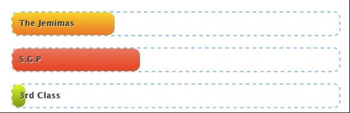
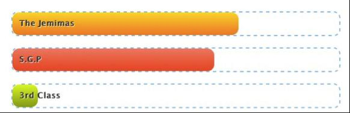
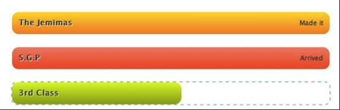
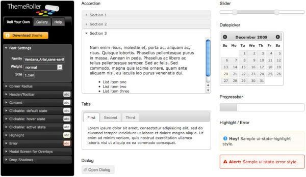
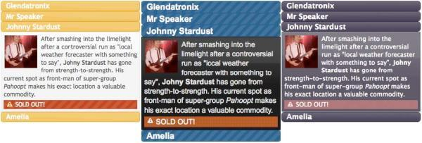
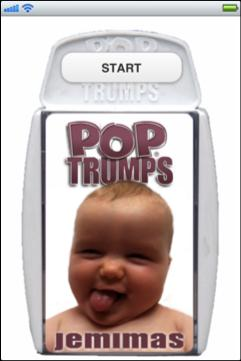
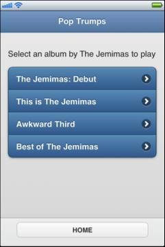
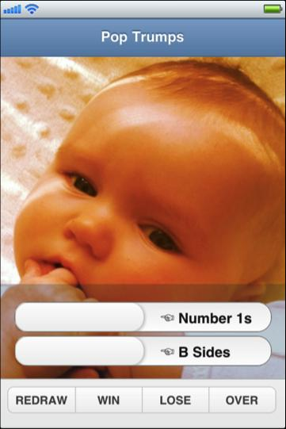

{% include JB/setup %}
{% raw %}
<div>
<div class="calibre3"></div><div class="toc" title="Chapter 9Plugins, Themes, and Advanced Topics"><div class="toc"><div class="toc"><div class="toc"><div class="calibre3"></div><h1 class="title"><a xmlns:saxon="http://icl.com/saxon" id="chapter_advanced" class="calibre5"></a><span xmlns:d="http://docbook.org/ns/docbook" class="sitepoint-chapter-titlepage-label">Chapter <span class="sitepoint-chapter-titlepage-number">9</span></span><br xmlns:d="http://docbook.org/ns/docbook" class="calibre11"/><span xmlns:d="http://docbook.org/ns/docbook" class="calibre5">Plugins, Themes, and Advanced Topics</span></h1></div></div></div>
  
      

  
      jQuery, like the game of chess, or any version of Tetris, is simple to
  learn but difficult to master. Thanks to its seamless integration with the
  Document Object Model, it feels natural and easy to use. But jQuery is a
  quiet achiever: it doesn’t like to brag about it, but under that hood lies
  an extensible architecture, a powerful event-handling system, and a robust
  plugin framework.

  
      <div class="toc" title="Plugins"><div class="toc"><div class="toc"><div class="toc"><h2 class="title1"><a xmlns:saxon="http://icl.com/saxon" id="section_plugins" class="calibre5"></a>Plugins</h2></div></div></div>
    
         

    
         
            <a id="ch09-001"></a>“Hey, now that everything’s in place, can you just go back
    and put that menu from Phase 3 into the admin section? And can you add the
    cool lists you made in the last phase to those lists on the front end, and
    add the scroller effect you did—you can just copy and paste the code,
    right?”

    
         Ah, copy/paste—our good friend and worst enemy. Sure, it might seem
    like a quick way to get a piece of functionality up and running, but we
    all know that this kind of code reuse can so easily degenerate into our
    worst JavaScript nightmares. And we can’t let that happen to our beautiful
    jQuery creations.

    
         You’ve seen throughout the book how extremely useful the jQuery
    plugin architecture is. We have made use of all manner of third-party
    creations: from styleable scrollbars to shuffling image galleries and
    autocompleting form fields. The good news is that it’s extremely easy to
    package your code as a plugin for reuse in your other projects—and, if
    your code is really special, in other developers’ projects as
    well!<a id="d4e11608"></a>
         

    
         <div class="toc" title="Creating a Plugin"><div class="toc"><div class="toc"><div class="toc"><h3 class="title2"><a xmlns:saxon="http://icl.com/saxon" id="d4e11609" class="calibre5"></a>Creating a Plugin</h3></div></div></div>
      
            

      
            It will only be a short time into your jQuery-writing life before
      you have the urge to turn some of your code into a plugin. There’s
      nothing better than seeing a bit of your own code being called from the
      middle of a jQuery chain! The best part is that it’s a very simple
      process to convert your existing jQuery into a plugin, and you can make
      it as customizable as you like.

      
            <div class="toc" title="Setting Up"><div class="toc"><div class="toc"><div class="toc"><h4 class="title3"><a xmlns:saxon="http://icl.com/saxon" id="d4e11612"></a>Setting Up<a id="ch09-002"></a>
               </h4></div></div></div>
        
               

        
               Before we start, we need an idea for our plugin. Some time ago,
        one of the client team mentioned that they’d like to highlight all the
        text paragraphs on the page, so that when a user moved their mouse
        over the paragraphs, text would become unhighlighted to indicate it
        had been read. While you’ll agree this is far from being the best user
        interface idea, it’s sufficiently simple for the purpose of
        demonstrating how to make a plugin, without having to concentrate on
        the effect’s code itself.

        
               All we need to do to make a plugin callable like regular jQuery
        methods is attach a function to the jQuery
        <span><strong class="calibre9">prototype</strong></span>. In JavaScript, the <a id="ch09-003"></a>
                  <code class="email">prototype</code> property of any object or
        built-in data type can be used to extend it with new methods or
        properties. For this exercise, we’ll be using the
        <code class="email">prototype</code> property of the core
        <code class="email">jQuery</code> object itself to add our new methods to our
        plugin.

        
               The safest (read: only!) way to do this is to create a
        <a id="ch09-004"></a>private scope for the <a id="ch09-004a"></a>
                  <code class="email">jQuery</code> function. This
        JavaScript trick ensures that your plugin will work nicely, even on
        pages where a person is using the <a id="ch09-004b"></a>
                  <code class="email">$</code> function for non-jQuery
        purposes:

        
               <pre class="programlisting">(function($) {
  // Scope for your plugin code
})(jQuery);</pre>

        
               This code can go anywhere in your script, but standard practice
        is to put it in a separate JavaScript file named <a id="ch09-006a"></a>
                  <a id="ch09-006"></a>
                  <span xmlns:l="http://docbook.sourceforge.net/xmlns/l10n/1.0" xmlns:d="http://docbook.org/ns/docbook">jquery.pluginname.js</span>, and include
        it as you’d include any plugin. Now that you have a stand-alone file,
        you can easily use it in future projects or share it with the world!
        And you can rest assured that inside this protective shell you can use
        the <code class="email">$</code> alias with impunity.

        
               That’s all there is in the way of preliminaries, so it’s time to
        start to writing our plugin. First we need to give it a name,
        HighlightOnce, and attach it to the jQuery plugin hook, <a id="ch09-007"></a>
                  <a id="ch09-007b"></a>
                  <code class="email">$.fn</code>:

        
               <div class="toc"><a xmlns:saxon="http://icl.com/saxon" id="d4e11657"></a><div xmlns:l="http://docbook.sourceforge.net/xmlns/l10n/1.0" xmlns:d="http://docbook.org/ns/docbook" class="sitepoint-formal-example-heading"><em class="calibre8" title="chapter_09/01_plugins/jquery.highlightonce.js (excerpt)">
		
                     <span class="sitepoint-formal-example-filename"><span>chapter_09/01_plugins/jquery.highlightonce.js</span></span>
          (excerpt)
	</em></div><div class="toc">
          
                  

          
                  <pre class="programlisting">(function($) {
  // Shell for your plugin code
  $.fn.highlightOnce = function() {
    // Plugin code
  }
})(jQuery);</pre>
        
               </div></div>

        
               Internally <code class="email">$.fn</code> is an alias of the
        <code class="email">jQuery.prototype</code> JavaScript property, and it’s
        the perfect place to put our plugins. This is where jQuery puts its
        actions, so now that we’ve added our custom action, we can call it as
        if it was built into jQuery.<a id="d4e11664"></a>
                  <a id="d4e11665"></a>
               

        
               At this point, our code <span><em class="calibre8">looks</em></span> like a jQuery
        plugin, but it won’t act like one; there’s still one more task. If we
        were to perform some operations inside our plugin code right now, we
        would actually be working on the <span><em class="calibre8">entire selection at
        once</em></span>; for example, if we ran
        <code class="email">$('p').highlightOnce()</code>, we’d be operating on every
        paragraph element as a single selection. What we need to do is work on
        each element, one at a time, and return the element so that the jQuery
        chain can continue. Here’s a fairly standard construct for
        plugins:

        
               <div class="toc"><a xmlns:saxon="http://icl.com/saxon" id="d4e11670"></a><div xmlns:l="http://docbook.sourceforge.net/xmlns/l10n/1.0" xmlns:d="http://docbook.org/ns/docbook" class="sitepoint-formal-example-heading"><em class="calibre8" title="chapter_09/01_plugins/jquery.highlightonce.js (excerpt)">
		
                     <span class="sitepoint-formal-example-filename"><span>chapter_09/01_plugins/jquery.highlightonce.js</span></span>
          (excerpt)
	</em></div><div class="toc">
          
                  

          
                  <pre class="programlisting">// Plugin code
return this.each(function() {
  // Do something to each item
});</pre>
        
               </div></div>

        
               So you now have a nice skeleton for creating simple plugins.
        Save this outline so that you can quickly create new plugins on a
        whim.<a id="d4e11675"></a>
               
      
            </div>

      
            <div class="toc" title="Adding the Plugin’s Functionality"><div class="toc"><div class="toc"><div class="toc"><h4 class="title3"><a xmlns:saxon="http://icl.com/saxon" id="d4e11676"></a>Adding the Plugin’s Functionality<a id="ch09-008"></a>
               </h4></div></div></div>
        
               

        
               Our HighlightOnce plugin is ready to roll, so let’s give it a
        job to do. All the structure we’ve added so far is just the
        scaffolding; it’s now time to create a building! The type of code we
        can run in the guts of our plugin is exactly the same as the code
        we’re used to writing; we can access the current object with the
        <code class="email">$(this)</code> construct and execute any jQuery or
        JavaScript code we need to.

        
               The first function our plugin needs to accomplish is to
        <a id="ch09-009"></a>highlight every selected element, so we’ll just set the
        background to a bright yellow color. Next, we need to handle when the
        user mouses over the element so that we can remove the highlight. We
        only want this to happen once, as soon as the element is faded back to
        the original color (don’t forget, we need the jQuery UI Effects
        component to do this, or at least the jQuery color plugin):

        
               <div class="toc"><a xmlns:saxon="http://icl.com/saxon" id="d4e11687"></a><div xmlns:l="http://docbook.sourceforge.net/xmlns/l10n/1.0" xmlns:d="http://docbook.org/ns/docbook" class="sitepoint-formal-example-heading"><em class="calibre8" title="chapter_09/01_plugins/jquery.highlightonce.js (excerpt)">
		
                     <span class="sitepoint-formal-example-filename"><span>chapter_09/01_plugins/jquery.highlightonce.js</span></span>
          (excerpt)
	</em></div><div class="toc">
          
                  

          
                  <pre class="programlisting">// Do something to each item
$(this)
  .data('original-color', $(this).css('background-color'))
  .css('background-color', '#fff47f')
  .one('mouseenter', function() {
    $(this).animate({
      'background-color': $(this).data('original-color')
    }, 'fast');
  });</pre>
        
               </div></div>

        
               There just happens to be a jQuery action that fits our needs
        exactly: the <a id="ch09-010"></a>
                  <code class="email">one</code> action. Functionally, the
        <code class="email">one</code> action is identical to the <a id="ch09-011"></a>
                  <code class="email">bind</code> action we saw earlier, in
        that it lets us attach an event handler to our element. The
        distinction with <code class="email">one</code> is that the event will
        only ever run <span><em class="calibre8">once</em></span>, after which the event will
        automatically unbind itself. Be careful not to confuse
        <code class="email">one</code> with <code class="email">on</code>,
        though!.

        
               For our code, we save the current background color in the
        element’s <code class="email">data</code> store; then bind the
        <code class="email">mouseover</code> event to the DOM elements that are
        selected. When the user mouses over the element, our code runs and the
        background color is animated back to the original. And with that, our
        plugin is ready to be used:

        
               <div class="toc"><a xmlns:saxon="http://icl.com/saxon" id="d4e11710"></a><div xmlns:l="http://docbook.sourceforge.net/xmlns/l10n/1.0" xmlns:d="http://docbook.org/ns/docbook" class="sitepoint-formal-example-heading"><em class="calibre8" title="chapter_09/01_plugins/script.js (excerpt)">
		
                     <span class="sitepoint-formal-example-filename"><span>chapter_09/01_plugins/script.js</span></span>
          (excerpt)
	</em></div><div class="toc">
          
                  

          
                  <pre class="programlisting">$('p')
  .hide()
  .highlightOnce()
  .slideDown();</pre>
        
               </div></div>

        
               It’s quite exciting: our functionality is captured in a
        chainable, reusable plugin that we’ve nestled in between the
        <code class="email">hide</code> and <code class="email">slideDown</code>
        actions. Given that 11 lines of code is all that was required (and six
        of those are stock-standard plugin scaffolding), you can see it’s
        worth turning any functionality you intend to reuse into a
        plugin.<a id="d4e11717"></a>
               
      
            </div>

      
            <div class="toc" title="Adding Options"><div class="toc"><div class="toc"><div class="toc"><h4 class="title3"><a xmlns:saxon="http://icl.com/saxon" id="d4e11718"></a>Adding Options<a id="ch09-012"></a>
                  <a id="ch09-012a"></a>
               </h4></div></div></div>
        
               

        
               jQuery plugins are an excellent way to produce reusable code,
        but to be truly useful, our plugins need to be applicable outside the
        context for which we created them—they need
        to be <span><em class="calibre8">customizable</em></span>. We can add user-specified
        options to our plugins, which can then be used to modify the plugin’s
        behavior when it’s put to use.

        
               We’re familiar with how options work from a plugin user’s
        perspective, as we’ve passed in options to just about every plugin
        we’ve used throughout the book. Options let us modify the plugin’s
        functionality in both obvious and more subtle ways, so that it can be
        used in as wide a range of situations as we can imagine.

        
               There are two types of <a id="ch09-013"></a>plugin options: simple values and object literals. Let’s
        start with the simpler one to see how this works. For our
        HighlightOnce plugin, it seems quite limiting to have the color
        hard-coded. We’d like to give developers the choice of highlighting
        their elements in any color they’d like. Let’s make that an
        option:

        
               <div class="toc"><a xmlns:saxon="http://icl.com/saxon" id="d4e11733"></a><div xmlns:l="http://docbook.sourceforge.net/xmlns/l10n/1.0" xmlns:d="http://docbook.org/ns/docbook" class="sitepoint-formal-example-heading"><em class="calibre8" title="chapter_09/02_plugin_options/jquery.highlightonce.js (excerpt)">
		
                     <span class="sitepoint-formal-example-filename"><span>chapter_09/02_plugin_options/jquery.highlightonce.js</span></span>
          (excerpt)
	</em></div><div class="toc">
          
                  

          
                  <pre class="programlisting">$.fn.highlightOnce = function(color) {  
  …
  $(this).css('background-color', color  || '#fff47f')
  …
};</pre>
        
               </div></div>

        
               The plugin can be called with a color, but can also be called
        without parameters, in which case a default value will be used (thanks
        to the JavaScript <a id="ch09-014"></a>
                  <code class="email">||</code> operator). Let’s highlight our
        paragraphs in green:

        
               <div class="toc"><a xmlns:saxon="http://icl.com/saxon" id="d4e11742"></a><div xmlns:l="http://docbook.sourceforge.net/xmlns/l10n/1.0" xmlns:d="http://docbook.org/ns/docbook" class="sitepoint-formal-example-heading"><em class="calibre8" title="chapter_09/02_plugin_options/script.js (excerpt)">
		
                     <span class="sitepoint-formal-example-filename"><span>chapter_09/02_plugin_options/script.js</span></span>
          (excerpt)
	</em></div><div class="toc">
          
                  

          
                  <pre class="programlisting">$('p')
  .hide()
  .highlightOnce('green')
  .slideDown();</pre>
        
               </div></div>

        
               If you have one or two simple options that are always required,
        this approach is fine. <a id="d4e11747"></a>
                  <a id="ch09-015a"></a>
                  <a id="ch09-015"></a>But the more complicated your plugins, the more numerous
        your settings, and users will want to override some and keep the
        default values for others. This is where we turn to the more complex
        object literal notation.

        
               It’s not scary; you already know how to define this type of
        settings object. We’ve used them for <code class="email">animate</code>,
        <code class="email">css</code>, and most jQuery UI components. The
        key/value object has the benefit of needing only one parameter to be
        defined, in which users can specify multiple settings. Our first step
        is to set up default values for each option:

        
               <div class="toc"><a xmlns:saxon="http://icl.com/saxon" id="d4e11757"></a><div xmlns:l="http://docbook.sourceforge.net/xmlns/l10n/1.0" xmlns:d="http://docbook.org/ns/docbook" class="sitepoint-formal-example-heading"><em class="calibre8" title="chapter_09/03_plugin_options_with_defaults/jquery.highlightonce.js (excerpt)">
		
                     <span class="sitepoint-formal-example-filename"><span>chapter_09/03_plugin_options_with_defaults/jquery.highlightonce.js</span></span>
          (excerpt)
	</em></div><div class="toc">
          
                  

          
                  <pre class="programlisting">$.fn.highlightOnce.defaults = {
  color : '#fff47f',
  duration : 'fast'
}; </pre>
        
               </div></div>

        
               We now have the defaults as an object, so we need to make use of
        the jQuery <code class="email">$.extend</code> function. This handy
        function has several uses, but for our purposes we’ll use it to extend
        an object by adding all the properties from another object. This way,
        we can extend the options the user passes in with our default
        settings—the plugin will have values specified for every option
        already, and if the user specifies one of them, the default will be
        overridden. Perfect! Let’s look at the code:

        
               <div class="toc"><a xmlns:saxon="http://icl.com/saxon" id="d4e11763"></a><div xmlns:l="http://docbook.sourceforge.net/xmlns/l10n/1.0" xmlns:d="http://docbook.org/ns/docbook" class="sitepoint-formal-example-heading"><em class="calibre8" title="chapter_09/03_plugin_options_with_defaults/jquery.highlightonce.js (excerpt)">
		
                     <span class="sitepoint-formal-example-filename"><span>chapter_09/03_plugin_options_with_defaults/jquery.highlightonce.js</span></span>
          (excerpt)
	</em></div><div class="toc">
          
                  

          
                  <pre class="programlisting">$.fn.highlightOnce = function(options) {  
  options = $.extend({}, $.fn.highlightOnce.defaults, options);
  
  return this.each( … );
};</pre>
        
               </div></div>

        
               Our <code class="email">options</code> variable contains the correct
        settings inside it, whether they’ve been defined by the user or by the
        default object. <a id="d4e11769"></a>
                  <a id="d4e11770"></a>Now we can use the settings in our
        code:

        
               <div class="toc"><a xmlns:saxon="http://icl.com/saxon" id="d4e11771"></a><div xmlns:l="http://docbook.sourceforge.net/xmlns/l10n/1.0" xmlns:d="http://docbook.org/ns/docbook" class="sitepoint-formal-example-heading"><em class="calibre8" title="chapter_09/03_plugin_options_with_defaults/jquery.highlightonce.js (excerpt)">
		
                     <span class="sitepoint-formal-example-filename"><span>chapter_09/03_plugin_options_with_defaults/jquery.highlightonce.js</span></span>
          (excerpt)
	</em></div><div class="toc">
          
                  

          
                  <pre class="programlisting">$(this)
  .data('original-color', $(this).css('background-color'))
  .css('background-color', options.color)
  .one('mouseenter', function() {
    $(this).animate({
      'background-color': $(this).data('original-color')
    }, options.duration);
  });</pre>
        
               </div></div>

        
               As the plugin user, we can specify the color or duration of the
        highlight, or accept the defaults. In the following example, we’ll
        accept the default color, but override the duration to be 2,000
        milliseconds rather than “fast”:

        
               <div class="toc"><a xmlns:saxon="http://icl.com/saxon" id="d4e11776"></a><div xmlns:l="http://docbook.sourceforge.net/xmlns/l10n/1.0" xmlns:d="http://docbook.org/ns/docbook" class="sitepoint-formal-example-heading"><em class="calibre8" title="chapter_09/03_plugin_options_with_defaults/script.js (excerpt)">
		
                     <span class="sitepoint-formal-example-filename"><span>chapter_09/03_plugin_options_with_defaults/script.js</span></span>
          (excerpt)
	</em></div><div class="toc">
          
                  

          
                  <pre class="programlisting">$('p')
  .hide()
  .highlightOnce({duration: 2000})
  .slideDown();</pre>

          
                  <a id="d4e11780"></a>

          
                  <a id="d4e11781"></a>
        
               </div></div>
      
            </div>

      
            <div class="toc" title="Adding Callbacks"><div class="toc"><div class="toc"><div class="toc"><h4 class="title3"><a xmlns:saxon="http://icl.com/saxon" id="d4e11782"></a>Adding Callbacks<a id="ch09-016a"></a>
                  <a id="ch09-016"></a>
               </h4></div></div></div>
        
               

        
               You’ve seen how useful callback functions and events can be.
        Many of the effects and controls throughout the book rely on them, and
        many of the plugins we’ve used have given us
        access to callbacks to customize their functionality. <a id="ch09-017"></a>Callbacks are a mechanism for giving your plugin’s users
        a place to run their own code, based on events occurring inside your
        plugin. Generally, you’ll have a fairly good idea of what events you’d
        like to expose to your users. For our HighlightOnce plugin, for
        example, we might want to run additional code when the effect is set
        up, when the effect concludes, and perhaps when the fade-out
        commences.

        
               To demonstrate, let’s try exposing a <a id="ch09-018"></a>
                  <code class="email">setup</code> event (which will run
        after the <code class="email">mouseover</code> handlers are attached), and a
        <a id="ch09-019"></a>
                  <code class="email">complete</code> event (which will run
        after the final <code class="email">animate</code> method
        concludes):

        
               <div class="toc"><a xmlns:saxon="http://icl.com/saxon" id="d4e11805"></a><div xmlns:l="http://docbook.sourceforge.net/xmlns/l10n/1.0" xmlns:d="http://docbook.org/ns/docbook" class="sitepoint-formal-example-heading"><em class="calibre8" title="chapter_09/04_plugin_callbacks/jquery.highlightonce.js (excerpt)">
		
                     <span class="sitepoint-formal-example-filename"><span>chapter_09/04_plugin_callbacks/jquery.highlightonce.js</span></span>
          (excerpt)
	</em></div><div class="toc">
          
                  

          
                  <pre class="programlisting">$.fn.highlightOnce.defaults = {
  color: '#fff47f',
  duration: 'fast',
  setup: null,
  complete: null
};</pre>
        
               </div></div>

        
               The callback functions shouldn’t do anything by <a id="ch09-020"></a>default, so we’ll set them to <code class="email">null</code>.
        When the time comes to run the callbacks, there are a few possible
        ways of proceeding. If our callback needs to run in the place of a
        jQuery callback, we can simply provide the function passed in by our
        users to the jQuery action. Otherwise, we’ll need to call the function
        manually at the appropriate location:

        
               <div class="toc"><a xmlns:saxon="http://icl.com/saxon" id="d4e11814"></a><div xmlns:l="http://docbook.sourceforge.net/xmlns/l10n/1.0" xmlns:d="http://docbook.org/ns/docbook" class="sitepoint-formal-example-heading"><em class="calibre8" title="chapter_09/04_plugin_callbacks/jquery.highlightonce.js (excerpt)">
		
                     <span class="sitepoint-formal-example-filename"><span>chapter_09/04_plugin_callbacks/jquery.highlightonce.js</span></span>
          (excerpt)
	</em></div><div class="toc">
          
                  

          
                  <pre class="programlisting">$(this)
  .data('original-color', $(this).css('background-color'))
  .css('background-color', options.color)
  .one('mouseenter', function() {
    $(this).animate(
      {'background-color': $(this).data('original-color')}, 
      options.duration,
      options.complete 
    );
  });

// Fire the setup callback
if ($.isFunction(options.setup)) {
    options.setup.call(this);
}</pre>
        
               </div></div>

        
               Above we can see both types of callbacks. The <a id="ch09-021"></a>
                  <code class="email">complete</code> callback handler is
        easy: the effect is completed when the
        <code class="email">animate</code> method is finished, and the
        <code class="email">animate</code> action accepts a callback function
        itself, so we just pass the function along. No such luck with the
        <a id="ch09-022"></a>
                  <code class="email">setup</code> handler, though; we’ll
        have to fire that one ourselves. We turn to jQuery and a dash of
        advanced JavaScript to execute the code. First, we check to see if the
        callback is a function with the handy <a id="ch09-023b"></a>
                  <a id="ch09-023"></a>
                  <code class="email">$.isFunction</code> jQuery action that
        returns a Boolean value: <code class="email">true</code> if the callback is a
        function, <code class="email">false</code> if it’s not. If it’s the latter
        (which is most likely given the user left the defaults as they were,
        in which case it will still be <code class="email">null</code>), there’s no
        point trying to execute it!

        
               <div class="tip" title="Tip: More Utility Functions"><h3 class="title2">Tip: More Utility Functions
                  </h3>
          
                  

          
                  In addition to <code class="email">$.isFunction</code>, jQuery
          also provides the following functions: <a id="ch09-024"></a>
                     <a id="ch09-024b"></a>
                     <code class="email">$.isArray</code> (for testing if a
          variable is an array), <a id="ch09-025"></a>
                     <code class="email">$.isPlainObject</code> (for simple
          JavaScript objects), and <a id="ch09-026"></a>
                     <code class="email">$.isEmptyObject</code> (for an
          object that has no properties). These functions provide you with a
          number of ways to ascertain the nature and properties of a
          JavaScript construct.
        
               </div>

        
               
                  <a id="ch09-027"></a>If the callback <span><em class="calibre8">has</em></span> been defined,
        we need to run it. There are several ways to run a JavaScript
        function, and the easiest is to just call it:
        <code class="email">options.setup()</code>. This will run fine, but the
        problem is that it’s called in the <a id="ch09-028"></a>
                  <a id="ch09-028a"></a>scope of the <code class="email">default</code> object, instead
        of in the scope of the event’s target element (as we’re used to). So
        the callback function would be unable to determine what DOM element it
        was dealing with. To remedy this, we use the JavaScript method
        <a id="ch09-029"></a>
                  <code class="email">call</code>. The first parameter you
        pass to <code class="email">call</code> will override
        <code class="email">this</code> in the method you’re calling. In our example,
        we pass in <code class="email">this</code>, which is the DOM element we
        want.

        
               With the scope corrected, we can now use
        <code class="email">$(this)</code> inside the
        <code class="email">complete</code> event handler to slide up the
        element once the effect is done and dusted:

        
               <div class="toc"><a xmlns:saxon="http://icl.com/saxon" id="d4e11883"></a><div xmlns:l="http://docbook.sourceforge.net/xmlns/l10n/1.0" xmlns:d="http://docbook.org/ns/docbook" class="sitepoint-formal-example-heading"><em class="calibre8" title="chapter_09/04_plugin_callbacks/script.js (excerpt)">
		
                     <span class="sitepoint-formal-example-filename"><span>chapter_09/04_plugin_callbacks/script.js</span></span>
          (excerpt)
	</em></div><div class="toc">
          
                  

          
                  <pre class="programlisting">$('p')
  .hide()
  .highlightOnce({ 
    color: '#FFA86F',
    complete: function() {
      $(this).slideUp();
    }
  })
  .slideDown();</pre>

          
                  <a id="d4e11887"></a>

          
                  <a id="d4e11888"></a>
        
               </div></div>
      
            </div>

      
            <div class="toc" title="jQuery-style Callback"><div class="toc"><div class="toc"><div class="toc"><h4 class="title3"><a xmlns:saxon="http://icl.com/saxon" id="d4e11889"></a>jQuery-style Callback<a id="ch09-030"></a>
                  <a id="ch09-030a"></a>
               </h4></div></div></div>
        
               

        
               You might have noticed that the jQuery callbacks seem better
        integrated than our plugin’s named events. For example, in the
        <code class="email">hide</code> action, you can specify the callback
        function as either the first (and only) parameter, or you can include
        the <code class="email">speed</code> parameter and then the callback function.
        It’s unnecessary to include a key/value pair as we did above. What’s
        the secret? It turns out to be a little bit of a JavaScript hack. If
        you detect that the first parameter is a function rather than an
        object, you can assume that only a callback has been specified, so you
        shift the parameters over.

        
               Here’s a truncated example from the jQuery core library, part of
        the Ajax <code class="email">load</code> action. The
        <code class="email">params</code> parameter is optional, so if it isn’t
        supplied, the second parameter is assumed to be the callback:

        
               <pre class="programlisting">load: function( url, params, callback ){
  // If the second parameter is a function
  if (jQuery.isFunction( params )){
    // We assume that it's the callback
    callback = params;
    params = null;
  }
}</pre>

        
               The <code class="email">params</code> parameter is supposed to be an
        object filled with various settings. But if we detect that it’s
        actually a function, we assign the function to the
        <code class="email">callback</code> variable and clear the
        <code class="email">params</code> variable. It’s a cool trick and a good way
        to make your plugins feel more jQuery-ish.

        
               Let’s modify our HighlightOnce plugin to use this callback
        detection trick:

        
               <div class="toc"><a xmlns:saxon="http://icl.com/saxon" id="d4e11909"></a><div xmlns:l="http://docbook.sourceforge.net/xmlns/l10n/1.0" xmlns:d="http://docbook.org/ns/docbook" class="sitepoint-formal-example-heading"><em class="calibre8" title="chapter_09/05_jquery_style_callbacks/jquery.highlightonce.js (excerpt)">
		
                     <span class="sitepoint-formal-example-filename"><span>chapter_09/05_jquery_style_callbacks/jquery.highlightonce.js</span></span>
          (excerpt)
	</em></div><div class="toc">
          
                  

          
                  <pre class="programlisting">$.fn.highlightOnce = function(options, callback) {
  if ($.isFunction(options)) {
    callback = options;
    options = null;
  }
  options = $.extend($.fn.highlightOnce.defaults,options);
  
  return this.each(function() {
    // Do something to each item
    $(this)
      .data('original-color', $(this).css('background-color'))
      .css('background-color', options.color)
      .one('mouseenter', function() {
        $(this).css('background-color', '');
        $.isFunction(callback) &amp;&amp; callback();
      });
  });
};</pre>

          
                  <a id="d4e11913"></a>

          
                  <a id="d4e11914"></a>
        
               </div></div>
      
            </div>
    
         </div>
  
      </div>

  
      <div class="toc" title="Advanced Topics"><div class="toc"><div class="toc"><div class="toc"><h2 class="title1"><a xmlns:saxon="http://icl.com/saxon" id="d4e11915" class="calibre5"></a>Advanced Topics</h2></div></div></div>
    
         

    
         Eventually the thrill of creating plugins will wear off a smidgen,
    and you’ll start to wonder if there are any other gems hidden within
    jQuery. And you’d be right to wonder. In addition to the fantastic plugin
    architecture we’ve just explored, jQuery provides a mechanism for
    extending and overwriting its core functionality, and a flexible event
    system for defining and fine-tuning how your components respond to your
    users and other components.

    
         <div class="toc" title="Extending jQuery"><div class="toc"><div class="toc"><div class="toc"><h3 class="title2"><a xmlns:saxon="http://icl.com/saxon" id="d4e11918" class="calibre5"></a>Extending jQuery<a id="ch09-031x" class="calibre5"></a>
            </h3></div></div></div>
      
            

      
            Plugins are not the only jQuery mechanisms for code reuse and
      extensibility; at your disposal is a system to add plugin-like
      functionality, as well as customize and override elements of the core
      jQuery system on the fly. If you have a chunk of code you’d like to
      execute in a native jQuery fashion, you can extend jQuery with your new
      functionality without creating a plugin, directly from inside your
      script. This way you can fine-tune your code to more closely fit the
      jQuery feel, and fine-tune jQuery to suit your exact
      requirements.

      
            <div class="toc" title="Adding Methods to jQuery"><div class="toc"><div class="toc"><div class="toc"><h4 class="title3"><a xmlns:saxon="http://icl.com/saxon" id="d4e11925"></a>Adding Methods to jQuery<a id="ch09-031"></a>
                  <a id="ch09-031a"></a>
                  <a id="ch09-031b"></a>
                  <a id="ch09-031c"></a>
                  <a id="ch09-031d"></a>
               </h4></div></div></div>
        
               

        
               Sometimes sections of the code you’re writing are such a pivotal
        part of your application that you find yourself using them over and
        over again. When this happens, you may have found a candidate for
        extending jQuery. Hidden away in the plugins section of the jQuery
        core library, the <code class="email">extend</code> method is normally
        the domain of the plugin developer. But don’t let that stop
        you!

        
               
                  <code class="email">jQuery.fn.extend()</code>, or
        <code class="email">$.fn.extend()</code>, accepts an object that allows
        us to provide a new set of methods to <span><em class="calibre8">extend</em></span>
        jQuery—adding new actions that can be performed on jQuery selections.
        This is closely linked to <a id="ch09-0319"></a>
                  <code class="email">jQuery.extend()</code>, which extends
        the jQuery object itself. The net result is exactly the same as the
        plugins we wrote earlier. Generally, you’ll use the
        <code class="email">extend</code> method when you have a group of small
        related methods you want to add, or when you’d like to override some
        existing functionality (we’ll look at that shortly).

        
               So let’s take a look at some code we’ve already created and see
        how it evolves using <code class="email">extend</code>. Back in <a href="ch08.html" title="Chapter 8Lists, Trees, and Tables">Chapter 8</a>, we looked at sorting lists:

        
               <pre class="programlisting">var SORTER = {};
SORTER.sort = function(which) {
  // Sort the selected list 
}</pre>

        
               Having to call our widgets like this lacks that jQuery feel. So
        we’ll convert the <code class="email">SORTER</code> method to integrate
        it more closely with jQuery, using
        <code class="email">extend</code>:

        
               <div class="toc"><a xmlns:saxon="http://icl.com/saxon" id="d4e11960"></a><div xmlns:l="http://docbook.sourceforge.net/xmlns/l10n/1.0" xmlns:d="http://docbook.org/ns/docbook" class="sitepoint-formal-example-heading"><em class="calibre8" title="chapter_09/06_extending_jquery/script.js (excerpt)">
		
                     <span class="sitepoint-formal-example-filename"><span>chapter_09/06_extending_jquery/script.js</span></span>
          (excerpt)
	</em></div><div class="toc">
          
                  

          
                  <pre class="programlisting">$.fn.extend({
  sorter: function() {
    return this.each(function() {
      var sorted = $(this).children('li').sort(function(a,b) {
        // Find the list items and sort them
        return $(a).text().toLowerCase() &gt; 
↵$(b).text().toLowerCase() ? 1 : -1;
      });
      $(this).append(sorted);
    });
  }
});</pre>
        
               </div></div>

        
               Inside the new <code class="email">sorter</code> method, we return
        the results of running the function from our original example against
        each member of the selection on which we called the action. This
        return structure allows us to use the action in a chain:

        
               <div class="toc"><a xmlns:saxon="http://icl.com/saxon" id="d4e11966"></a><div xmlns:l="http://docbook.sourceforge.net/xmlns/l10n/1.0" xmlns:d="http://docbook.org/ns/docbook" class="sitepoint-formal-example-heading"><em class="calibre8" title="chapter_09/06_extending_jquery/script.js (excerpt)">
		
                     <span class="sitepoint-formal-example-filename"><span>chapter_09/06_extending_jquery/script.js</span></span>
          (excerpt)
	</em></div><div class="toc">
          
                  

          
                  <pre class="programlisting">$('#ascending').click(function() {
  $('ul.sortable')
  .hide()
  .sorter()
  .slideDown();    
});</pre>
        
               </div></div>

        
               The biggest change from our original <code class="email">SORTER</code>
        widget is that once the <code class="email">extend</code> is in place,
        we no longer call the functions and pass in parameters; instead, we
        treat it like a normal jQuery action, much as we would had we packaged
        it into a plugin. Of course, you could take this same code and make it
        into a plugin. Doing it on the fly like this is just another option
        available to you.<a id="d4e11973"></a>
                  <a id="d4e11974"></a>
                  <a id="d4e11975"></a>
                  <a id="d4e11976"></a>
                  <a id="d4e11977"></a>
               
      
            </div>

      
            <div class="toc" title="$. Prefixed Functions"><div class="toc"><div class="toc"><div class="toc"><h4 class="title3"><a xmlns:saxon="http://icl.com/saxon" id="d4e11978"></a>
                  <code class="email">$.</code> Prefixed Functions<a id="ch09-032"></a>
                  <a id="ch09-032a"></a>
                  <a id="ch09-032b"></a>
               </h4></div></div></div>
        
               

        
               At the beginning of the book, we praised jQuery for being a very
        consistent library: each time we call on it we have a selector, an
        action, and maybe a few parameters. Once you learned that basic
        pattern, it would essentially be all you had to remember. Then, only a
        few paragraphs later, we snuck in some code that didn’t use a selector
        at all! Subsequently, we’ve seen several of these kinds of actions:
        <code class="email">$.ajax</code>, <code class="email">$.map</code>,
        <code class="email">$.slice</code>, <code class="email">$.trim</code>, and
        more.

        
               
                  <a id="ch09-033"></a>The <code class="email">$.</code> prefixed functions don’t work
        on a selection; rather, they’re general utility commands that can have
        a place outside a jQuery command chain. For example,
        <code class="email">$.map</code> can be used to map any arbitrary array,
        but it can also be used to modify a jQuery selection.

        
               The client team likes the Ajax Twitter-search component we
        developed in <a href="ch06.html" title="Chapter 6Construction, Ajax, and Interactivity">Chapter 6</a>, but wants a more
        human-readable time displayed for the tweets: for example, rather than
        “56 seconds ago,” they’d prefer it to say “about a minute ago.” This
        sounds like a good candidate for adding to the jQuery object, since
        it’s the sort of functionality you’d want to be able to use outside of
        a selection. Anytime we need a friendly-looking time period, we’d like
        to be able to call <code class="email">$.lapsed(time)</code> and obtain a nice
        string.

        
               To get underway, we’ll omit the actual logic for a second while
        we look at the function’s structure. The skeleton looks very similar
        to the plugins we created— passing the
        jQuery object to the wrapped function—so our code will work even if
        the <code class="email">$</code> alias has been redefined:

        
               <div class="toc"><a xmlns:saxon="http://icl.com/saxon" id="d4e12004"></a><div xmlns:l="http://docbook.sourceforge.net/xmlns/l10n/1.0" xmlns:d="http://docbook.org/ns/docbook" class="sitepoint-formal-example-heading"><em class="calibre8" title="chapter_09/07_$_prefixed_functions/script.js (excerpt)">
		
                     <span class="sitepoint-formal-example-filename"><span>chapter_09/07_$_prefixed_functions/script.js</span></span>
          (excerpt)
	</em></div><div class="toc">
          
                  

          
                  <pre class="programlisting">(function($) {
  $.lapsed = function(time) {
    var then = new Date(Date.parse(time));
        now = new Date();
        minutes = Math.round((now-then) / 60000);
        lapsed, seconds;

    // Determine pretty time
    …    
  };
})(jQuery);</pre>
        
               </div></div>

        
               Now we just need to attach our function to the jQuery object
        itself. Because we’re extending jQuery, we’ll have to be careful to
        avoid unintentionally overwriting any of the built-in function names.
        The code we’ll use to determine the “pretty” time is nothing more than
        a series of <a id="ch09-034"></a>
                  <code class="email">if</code>/<code class="email">else</code>
        structures. To keep the example simple, our helper will only go as far
        as “more than a minute ago”—but you’ll want to extend this to account
        for larger time spans:

        
               <div class="toc"><a xmlns:saxon="http://icl.com/saxon" id="d4e12013"></a><div xmlns:l="http://docbook.sourceforge.net/xmlns/l10n/1.0" xmlns:d="http://docbook.org/ns/docbook" class="sitepoint-formal-example-heading"><em class="calibre8" title="chapter_09/07_$_prefixed_functions/script.js (excerpt)">
		
                     <span class="sitepoint-formal-example-filename"><span>chapter_09/07_$_prefixed_functions/script.js</span></span>
          (excerpt)
	</em></div><div class="toc">
          
                  

          
                  <pre class="programlisting">// Determine pretty time
if (minutes === 0) {
  seconds = Math.round((now - then) / 1000);
  if (seconds &lt; 10) {
    lapsed = "less than 10 seconds ago";
  } 
  else if (seconds &lt; 20) {
    lapsed = "less than 20 seconds ago";
  }
  else {
    lapsed = "half a minute ago";
  }
}
else if (minutes === 1) {
  seconds = Math.round((now - then) / 1000); 
  if (seconds === 30) {
    lapsed = "half a minute ago";
  } else if (seconds &lt; 60) {
    lapsed = "about a minute ago";
  } else {
    lapsed = "1 minute ago";
  }
} else {
  lapsed = "more than a minute ago";
}
return lapsed;</pre>
        
               </div></div>

        
               To use this extension in our jQuery code, we pass a timestamp to
        the new <code class="email">lapsed</code> function, and append the
        result wherever we need it. Our functionality is neatly encapsulated,
        and ready for use on any number of future projects:

        
               <div class="toc"><a xmlns:saxon="http://icl.com/saxon" id="d4e12019"></a><div xmlns:l="http://docbook.sourceforge.net/xmlns/l10n/1.0" xmlns:d="http://docbook.org/ns/docbook" class="sitepoint-formal-example-heading"><em class="calibre8" title="chapter_09/07_$_prefixed_functions/script.js (excerpt)">
		
                     <span class="sitepoint-formal-example-filename"><span>chapter_09/07_$_prefixed_functions/script.js</span></span>
          (excerpt)
	</em></div><div class="toc">
          
                  

          
                  <pre class="programlisting">.append('&lt;span class="time"&gt;' + $.lapsed(this.created_at) 
↵+ '&lt;/span&gt;')</pre>

          
                  <a id="d4e12023"></a>

          
                  <a id="d4e12024"></a>

          
                  <a id="d4e12025"></a>
        
               </div></div>
      
            </div>

      
            <div class="toc" title="Overwriting Existing Functionality"><div class="toc"><div class="toc"><div class="toc"><h4 class="title3"><a xmlns:saxon="http://icl.com/saxon" id="d4e12026"></a>Overwriting Existing Functionality<a id="ch09-035"></a>
               </h4></div></div></div>
        
               

        
               One of the main differences between adding plugins via
        <code class="email">$.fn.myPlugin</code> rather than <code class="email">$.extend({
        myPlugin : … })</code>, is that the <a id="ch09-036"></a>
                  <a id="ch09-036a"></a>
                  <a id="ch09-036b"></a>
                  <code class="email">extend</code> mechanism
        <span><em class="calibre8">augments</em></span> the element you’re extending, rather
        than replacing it entirely. This is what makes it possible to extend
        jQuery itself (or existing plugins) with additional functionality. As
        well as adding new methods to jQuery, as we did above, we can extend
        the functionality of existing methods!

        
               As a simple example, we’re going to extend the functionality of
        the <a id="ch09-037"></a>
                  <code class="email">$.trim</code> method.
        <code class="email">$.trim</code> takes a string and removes any leading
        or trailing spaces. We’ll add an extra parameter to the method that,
        if set to <code class="email">true</code>, will remove
        <span><em class="calibre8">all</em></span> spaces from the given string:

        
               <div class="toc"><a xmlns:saxon="http://icl.com/saxon" id="d4e12053"></a><div xmlns:l="http://docbook.sourceforge.net/xmlns/l10n/1.0" xmlns:d="http://docbook.org/ns/docbook" class="sitepoint-formal-example-heading"><em class="calibre8" title="chapter_09/08_overwriting_existing_function/script.js (excerpt)">
		
                     <span class="sitepoint-formal-example-filename"><span>chapter_09/08_overwriting_existing_function/script.js</span></span>
          (excerpt)
	</em></div><div class="toc">
          
                  

          
                  <pre class="programlisting">(function($) {
  var _trim = $.trim;
  $.extend({
    trim:function(text, clear) {
      if (clear) {
        return text.replace(/\s+/g,'');
      }
      return  _trim.call(this, text);
    }
  });
})(jQuery);</pre>
        
               </div></div>

        
               First, as always, we’re playing nice for people who don’t want
        to use the <code class="email">$</code> for jQuery (see <a href="ch09.html#section_plugins" title="Plugins">the section called “Plugins”</a>). Next, we’re storing the original
        <code class="email">trim</code> function in a variable so we can access
        it later on. Finally, we reach the important bit: extending the
        <code class="email">trim</code> function. Our version of
        <code class="email">trim</code> is going to accept an extra Boolean
        parameter. If it’s set, we run our custom regular expression to remove
        <span><em class="calibre8">all</em></span> whitespace, and if it’s not set, we call the
        original jQuery <code class="email">trim</code> function.<a id="d4e12065"></a>
               

        
               Extending code in this way is particularly useful when dealing
        with more complex objects; for example, if you need to modify the
        <code class="email">$.ajax</code> method to do some additional
        processing on every request. In that situation, you’d only want to
        modify the particular aspects of the code that you needed to, and
        leave everything else alone. By storing the original function, and
        referring to it as necessary, it becomes a simple task.

        
               Don’t believe that it’s that simple? Let’s take another run at
        it, this time with a slightly more complicated method.

        
               Throughout the book, we’ve spoken of how much easier life is
        going to be for developers when the HTML5 standard becomes the norm.
        The hardest part about HTML5 is the waiting. And waiting … and
        waiting. So let’s strike a blow for HTML5 and extend the jQuery
        <a id="ch09-038"></a>
                  <a id="ch09-038a"></a>
                  <code class="email">animate</code> method to use CSS3
        animations when the browser’s ready for it. We’ll flip back to using
        the current <code class="email">animate</code> method if we find the
        punter isn’t ready.

        
               If you’ve been on the Web looking for jQuery CSS3 solutions, you
        might recognize the hand of <a id="ch09-039"></a>
                  <a href="http://addyosmani.com/blog/css3transitions-jquery/   ">Addy
        Osmani in what we’ll create.</a> Rest assured, we’ve asked him if
        we could draw on his code; we’ve changed it so much that only the
        concept remains—and even that’s been reworked! So let’s take a look at
        the bare bones of what we’ll be doing:<div class="toc"><a xmlns:saxon="http://icl.com/saxon" id="d4e12083"></a><div xmlns:l="http://docbook.sourceforge.net/xmlns/l10n/1.0" xmlns:d="http://docbook.org/ns/docbook" class="sitepoint-formal-example-heading"><em class="calibre8" title="chapter_09/09_extending_jquery_animate/script.js (excerpt)">
		
                        <span class="sitepoint-formal-example-filename"><span>chapter_09/09_extending_jquery_animate/script.js</span></span>
            (excerpt)
	</em></div><div class="toc">
            
                     

            
                     <pre class="programlisting">$.fn.extend({
  defaultAnimate: $.fn.animate,
  animate: function(props, options) {
   // detect support

   if (jQuery.support.transitions) {
    // use CSS3 animations
   }
   else {
    // use jQuery default animation
   }
  }
 });</pre>
          
                  </div></div>Our first task is to store the default
        <code class="email">animate</code> method as
        <code class="email">defaultAnimate</code>. When we need to use the
        default method, we can call it by its new name, and everything we’re
        accustomed to will be available there.

        
               Next up, we set about implementing our new animate method under
        the <code class="email">animate</code> name. We’ll perform some initial
        feature detection, and then use that to fork between our CSS3
        animation and the trusty jQuery version: <div class="toc"><a xmlns:saxon="http://icl.com/saxon" id="d4e12091"></a><div xmlns:l="http://docbook.sourceforge.net/xmlns/l10n/1.0" xmlns:d="http://docbook.org/ns/docbook" class="sitepoint-formal-example-heading"><em class="calibre8" title="chapter_09/09_extending_jquery_animate/script.js (excerpt)">
		
                        <span class="sitepoint-formal-example-filename"><span>chapter_09/09_extending_jquery_animate/script.js</span></span>
            (excerpt)
	</em></div><div class="toc">
            
                     

            
                     <pre class="programlisting">animate: function(props, options) {
    var prefixes = ['Moz','Webkit','O'],//,'Khtml','Ms'
        length = prefixes.length,
        effects = {
            duration: 2000,
            easing: "ease-in-out",
            complete: null
        },
        effect, i;
    jQuery.extend(effects, options);
    effect = ['all ', effects.duration / 1000, 's ', 
      ↵effects.easing].join("");

    if (!jQuery.support.transitions) {
      if (jQuery.support.transitions !== false) {
            jQuery.support.transitions = false;

            for (i = 0; i &lt; length; i += 1) {
                   if ((prefixes[i] + "Transition") in this[0]
                         ↵.style) {
                          jQuery.support.transitions = ["-", 
                            ↵prefixes[i], "-transition"].join("");
                    }
             }
       }
    }
    return $(this).each(function() {
        if (jQuery.support.transitions) {
            $(this).css(jQuery.support.transitions, effect)
               ↵.css(props);

            if ($.isFunction(effects.complete)) {
                setTimeout(function() {
                    effects.complete();
                }, effects.duration);
            }
        }
        else {
            options.easing = "linear";
            $(this).defaultAnimate(props, options);
        }
    });
}</pre>
          
                  </div></div>Once again, if you’ve been following along, there’s
        absolutely no new jQuery in that block of code; we’ve covered
        everything in the chapters getting here. But let’s have a quick recap
        just to drive it home.

        
               Passing in <em class="calibre8"><code class="email">props</code></em> and
        <em class="calibre8"><code class="email">options</code></em> parameters give us two clear benefits:
        we stay as close to the default <code class="email">animate</code>
        method as practicable, which helps with forward and backward
        compatibility, and we can pass the required parameters to
        <code class="email">defaultAnimate</code> when we need to. We accomplish
        a lot without having to remember very much at all.<a id="d4e12100"></a>
               

        
               Our variables are also straightforward.
        <code class="email">prefixes</code> is an array of the proprietary extensions
        we’ll use for the animation, <code class="email">length</code> is how many of
        those there are, and <code class="email">effects</code> are the default
        effects we’ll animate with. We then have an undefined
        <code class="email">effect</code>, which will be what we’re actually
        animating, and an <code class="email">i</code> for the index of a loop we’ll
        use. And that comment after <code class="email">prefixes</code> holds the
        other two legal proprietary extensions; we can add them back into our
        array when those browser vendors support CSS3 animations.

        
               Next, as we saw earlier in the chapter, we extend
        <code class="email">effects</code> using <code class="email">defaults</code>; hence,
        we pass through default values for anything the user doesn’t give us,
        and then populate <code class="email">effect</code> using values from our
        extended <code class="email">effects</code>: <div class="toc"><a xmlns:saxon="http://icl.com/saxon" id="d4e12113"></a><div xmlns:l="http://docbook.sourceforge.net/xmlns/l10n/1.0" xmlns:d="http://docbook.org/ns/docbook" class="sitepoint-formal-example-heading"><em class="calibre8" title="chapter_09/09_extending_jquery_animate/script.js (excerpt)">
		
                        <span class="sitepoint-formal-example-filename"><span>chapter_09/09_extending_jquery_animate/script.js</span></span>
            (excerpt)
	</em></div><div class="toc">
            
                     

            
                     <pre class="programlisting">if (!jQuery.support.transitions) {
  for (i = 0; i &lt; length; i += 1) {
    if ((prefixes[i] + "Transition") in this[0].style) {
      jQuery.support.transitions = ["-", prefixes[i], 
        ↵"-transition"].join("");
    }
  }
}</pre>
          
                  </div></div>The first condition we check in that <code class="email">if</code>
        block doesn’t exist in <em class="calibre8"><code class="email">jQuery.support</code></em> as a
        native property, and so JavaScript is going to always run the code
        inside this condition at least once. Its real job in our code is to
        stop the next element we call our <code class="email">animate</code>
        method on needing to check if CSS3 transitions are supported—if we’ve
        run it once, we’ll know one way or the other! The next
        <code class="email">if</code> condition check makes sure
        <em class="calibre8"><code class="email">jQuery.support.transitions</code></em> is really false, and
        only continues if it’s just falsy.

        
               <div class="tip" title="Note: What’s Truthy and Falsy?"><h3 class="title2">Note: What’s Truthy and Falsy?</h3>
          
                  

          
                  
                     <a id="ch09-040"></a>
                     <a id="ch09-040a"></a>A quick aside here: what do we mean by “falsy”?
          JavaScript supports Boolean data types; values which can be set to
          <code class="email">true</code> or <code class="email">false</code>. In addition,
          every value in JavaScript has an inherent Boolean value, generally
          known as either truthy or falsy. Falsy values include
          <code class="email">0</code>, <code class="email">""</code> (an empty string),
          <code class="email">null</code> or <code class="email">undefined</code>. Truthy
          values can include 1, <code class="email">"0"</code> or
          <code class="email">"false"</code> (the last two being non-empty strings).
          You can leap ahead to <a href="apb.html" title="Appendix B. JavaScript Tidbits">Appendix B</a> to find
          out more about truthiness and falsiness.
        
               </div>

        
               If it looks as if this check performs the same task as the
        previous conditional, that’s because it pretty much does. The
        difference, though, is that now we’re providing that only-run-it-once
        feature for non-compliant browsers too.

        
               Once inside both our conditional blocks, we firstly set the
        value of <a id="ch09-041"></a>
                  <a id="ch09-041c"></a>
                  <a id="ch09-041d"></a>
                  <em class="calibre8"><code class="email">jQuery.support.transitions</code></em> to
        <code class="email">false</code>, the property we just tested for those older
        browsers. With that set, a <code class="email">for</code> loop appends the
        members of our <code class="email">prefixes</code> array to the string
        “<code class="email">Transition</code>” and compares the concatenated values
        against the <code class="email">style</code> properties of the elements we
        want to animate. Compliant browsers will report
        <code class="email">true</code> for this check, and we’ll then use our CSS3
        animation. So Chrome will report <code class="email">true</code> for
        <code class="email">WebKitTransition</code>, and we’re away. And since
        <a id="ch09-042a"></a>
                  <a id="ch09-042"></a>
                  <a id="ch09-042x"></a>Internet Explorer is yet to support CSS3 animation, we
        removed <code class="email">Ms</code> from that array—as we said, there’s no
        point checking for support we know doesn’t exist. When IE10 comes out,
        we can add in support if it’s compliant.

        
               Next up, we perform a <code class="email">return</code> so that we can
        keep chaining and run an <code class="email">each</code> loop over the
        selection we’re calling <code class="email">animate</code> on (see? You
        <span><em class="calibre8">do</em></span> know all this!): <div class="toc"><a xmlns:saxon="http://icl.com/saxon" id="d4e12173"></a><div xmlns:l="http://docbook.sourceforge.net/xmlns/l10n/1.0" xmlns:d="http://docbook.org/ns/docbook" class="sitepoint-formal-example-heading"><em class="calibre8" title="chapter_09/09_extending_jquery_animate/script.js (excerpt)">
		
                        <span class="sitepoint-formal-example-filename"><span>chapter_09/09_extending_jquery_animate/script.js</span></span>
            (excerpt)
	</em></div><div class="toc">
            
                     

            
                     <pre class="programlisting">if (jQuery.support.transitions) {
  $(this).css(jQuery.support.transitions, effect).css(props);

  if ($.isFunction(effects.complete)) {
    setTimeout(function() {
      effects.complete();
    }, effects.duration);
  }
}</pre>
          
                  </div></div>Now, if our browser is compliant to the CSS3
        specification, <code class="email">jQuery.support.transitions</code> will have
        a value such as:<pre class="programlisting"> “-WebKit-transition”</pre>Well,
        it would if we were still using our Chrome browser. It has two
        characteristics: it’s truthy (see <a href="apb.html" title="Appendix B. JavaScript Tidbits">Appendix B</a>) and a valid CSS proprietary extension
        property name. So our browser will be animating with CSS3!<a id="d4e12180"></a>
                  <a id="d4e12181"></a>
                  <a id="d4e12182"></a>
               

        
               To perform its animation, we pass
        <code class="email">jQuery.support.transitions</code> into a garden-variety
        <code class="email">css</code> method call, along with the value we
        stored in <code class="email">effect</code>. Using the default values, it
        would look like this: <pre class="programlisting"> “all 2s ease-in-out”</pre>Lastly,
        if we’re in a compliant browser, we check to see if we’ve been passed
        a callback. If we have, we wait till after the animation is finished
        and call the callback method. The result is super-smooth animation
        using the best solution the browser has to run animation. jQuery’s
        animation is good, but CSS3 animation takes it to the next
        level.

        
               But our code’s not quite done yet. What if
        <code class="email">jQuery.support.transitions</code> still isn’t truthy?
        That’s where we go back to what jQuery knows best: we apply its
        default animation method, the one we stored as
        <code class="email">defaultAnimate</code>:<div class="toc"><a xmlns:saxon="http://icl.com/saxon" id="d4e12191"></a><div xmlns:l="http://docbook.sourceforge.net/xmlns/l10n/1.0" xmlns:d="http://docbook.org/ns/docbook" class="sitepoint-formal-example-heading"><em class="calibre8" title="chapter_09/09_extending_jquery_animate/script.js (excerpt)">
		
                        <span class="sitepoint-formal-example-filename"><span>chapter_09/09_extending_jquery_animate/script.js</span></span>
            (excerpt)
	</em></div><div class="toc">
            
                     

            
                     <pre class="programlisting">  else {
      options.easing = "linear";
      $(this).defaultAnimate(props, options);
  }</pre>
          
                  </div></div>This makes sense, but what is that
        <code class="email">options.easing</code> doing? <a id="ch09-044"></a>
                  <a id="ch09-044a"></a>CSS3 is <span><em class="calibre8">really</em></span> good at animating,
        but its range of animation styles is less comprehensive than jQuery’s;
        even more annoyingly, it uses hyphen-separated names in the styles,
        rather than the camel case that we’re familiar with. To remove as many
        possible conflicts as we can with our easing styles, we’re going to
        give all our noncompliant visitors the one <a id="ch09-045"></a>
                  <a id="ch09-045a"></a>easing: linear. They may lack the experience of a
        compliant browser, but they’ll still receive animation. Progressive
        enhancement, remember?

        
               So how does it look? All we need to do to see it in all its
        glory is call it: <div class="toc"><a xmlns:saxon="http://icl.com/saxon" id="d4e12209"></a><div xmlns:l="http://docbook.sourceforge.net/xmlns/l10n/1.0" xmlns:d="http://docbook.org/ns/docbook" class="sitepoint-formal-example-heading"><em class="calibre8" title="chapter_09/09_extending_jquery_animate/script.js (excerpt)">
		
                        <span class="sitepoint-formal-example-filename"><span>chapter_09/09_extending_jquery_animate/script.js</span></span>
            (excerpt)
	</em></div><div class="toc">
            
                     

            
                     <pre class="programlisting">$('#star_0 div').animate({ width: "580px" }, {
  complete: function () {
   $("#star_0").addClass("barred")
    .find("span").html("Made it");
  }
 }
);

$('#star_1 div').animate({ width: "580px" }, {
  duration: 2000,
  easing: 'linear',
  complete: function () {
   $("#star_1").addClass("barred")
    .find("span").html("Arrived");
  }
 }
);

$('#star_2 div').animate({ width: "580px" }, {
  duration: 7000,
  easing: 'ease-in-out',
  complete: function () {
   $("#star_2").addClass("barred")
    .find("span").html("Star status");
  }
 }
);</pre>
          
                  </div></div>Our first selection is only passing through the callback,
        and relying on the defaults for its other properties. The second sends
        all options, but doubles in duration as it’s sending through the
        default as its value. The last takes a while, but arrives in style
        with its classy <a id="ch09-046"></a>
                  <code class="email">ease-in-out</code>.

        
               When our animation starts, the second bar leaps out as seen in
        <a href="ch09.html#figfirstbar" title="Figure 9.1. Animation starting">Figure 9.1</a>, but is soon overtaken by the first bar
        evident in <a href="ch09.html#figsecondbar" title="Figure 9.2. Animation progressing">Figure 9.2</a>. Even though their
        durations are the same at two seconds each, the variation caused by
        the easing is dramatic. They both finish at the same point, as shown
        in <a href="ch09.html#figthirdbar" title="Figure 9.3. Nearing completion">Figure 9.3</a>, but look different getting there.
        <div class="toc"><a xmlns:saxon="http://icl.com/saxon" id="figfirstbar"></a><div class="figure-contents">
            
                     

            
                     <div class="figure-contents"></div>
          
                  </div><p xmlns:l="http://docbook.sourceforge.net/xmlns/l10n/1.0" xmlns:d="http://docbook.org/ns/docbook" class="title4">Figure 9.1. Animation starting</p></div>
                  <div class="toc"><a xmlns:saxon="http://icl.com/saxon" id="figsecondbar"></a><div class="figure-contents">
            
                     

            
                     <div class="figure-contents"></div>
          
                  </div><p xmlns:l="http://docbook.sourceforge.net/xmlns/l10n/1.0" xmlns:d="http://docbook.org/ns/docbook" class="title4">Figure 9.2. Animation progressing</p></div>
                  <div class="toc"><a xmlns:saxon="http://icl.com/saxon" id="figthirdbar"></a><div class="figure-contents">
            
                     

            
                     <div class="figure-contents"></div>
          
                  </div><p xmlns:l="http://docbook.sourceforge.net/xmlns/l10n/1.0" xmlns:d="http://docbook.org/ns/docbook" class="title4">Figure 9.3. Nearing completion</p></div>
                  <a id="d4e12236"></a>
                  <a id="d4e12237"></a>Our final script won’t outlast an
        official jQuery solution to the problem of cross-browser support for
        utilizing the opportunities offered by CSS3, but it’s a step in the
        right direction. And who knows, with the popularity of StarTrackr!,
        maybe the jQuery core team will take note and step up the schedule. We
        can only hope!<a id="d4e12238"></a>
               
      
            </div>

      
            <div class="toc" title="Create Your Own Selectors"><div class="toc"><div class="toc"><div class="toc"><h4 class="title3"><a xmlns:saxon="http://icl.com/saxon" id="d4e12239"></a>Create Your Own Selectors<a id="ch09-048"></a>
                  <a id="ch09-048a"></a>
                  <a id="ch09-048b"></a>
               </h4></div></div></div>
        
               

        
               Ten basic filters, four content filters, two visibility filters,
        six or so attribute filters, four child filters, and 14 form-focused
        filters. This is more than just the makings of a wicked Christmas
        carol: jQuery’s built-in filters allow you to easily select just about
        anything on the page. But what do we do when we want all the
        advertisement units in a page, or all the links that were clicked to
        leave a page, or all the break-out items below the fold?

        
               <div class="tip" title="Note: The Fold"><h3 class="title2">Note: The Fold</h3>
          
                  

          
                  "<a id="ch09-049"></a>Above the fold” in web design terms refers to the area
          of a page visible on page load, without scrolling. Hence, “below the
          fold” refers to the total area beneath that, which is invisible
          without scrolling.
        
               </div>

        
               Admittedly these are odd requests, but let’s use the opportunity
        to examine custom filters in detail; besides, in certain situations
        they can definitely work in your favor.

        
               Rather than finding elements <span><em class="calibre8">below</em></span> the
        fold, let’s turn to a more useful purpose and detect when an element
        is visible, or <span><em class="calibre8">above the fold</em></span>, on page load. If
        the element is above the fold, we can load its content via Ajax
        straight away. If not, we can delay the Ajax request until later,
        saving both bandwidth and page-load time:

        
               <div class="toc"><a xmlns:saxon="http://icl.com/saxon" id="d4e12260"></a><div xmlns:l="http://docbook.sourceforge.net/xmlns/l10n/1.0" xmlns:d="http://docbook.org/ns/docbook" class="sitepoint-formal-example-heading"><em class="calibre8" title="chapter_09/10_custom_selectors/script.js (excerpt)">
		
                     <span class="sitepoint-formal-example-filename"><span>chapter_09/10_custom_selectors/script.js</span></span>
          (excerpt)
	</em></div><div class="toc">
          
                  

          
                  <pre class="programlisting">$.extend($.expr[':'], {
  abovethefold: function(el) { 
    return $(el).offset().top &lt; $(window).scrollTop() + 
↵$(window).height(); 
  }
});</pre>
        
               </div></div>

        
               We’ve already looked at <code class="email">$.extend</code> a few
        times, so accessing the selector engine should be quite familiar. The
        <a id="ch09-050"></a>
                  <code class="email">$.expr[:]</code> object is what we need to
        extend in order to add our custom filters. We pass in a <a id="ch09-050a"></a>key/value pair, where the key is the name of our filter
        and the value is a function that takes a reference to an element. The
        function should return <code class="email">true</code> or
        <code class="email">false</code>. If it returns <code class="email">true</code>, the
        element tested (<code class="email">el</code>) will be added to the selection.
        Otherwise, it will be filtered out:

        
               <div class="toc"><a xmlns:saxon="http://icl.com/saxon" id="d4e12277"></a><div xmlns:l="http://docbook.sourceforge.net/xmlns/l10n/1.0" xmlns:d="http://docbook.org/ns/docbook" class="sitepoint-formal-example-heading"><em class="calibre8" title="chapter_09/10_custom_selectors/script.js (excerpt)">
		
                     <span class="sitepoint-formal-example-filename"><span>chapter_09/10_custom_selectors/script.js</span></span>
          (excerpt)
	</em></div><div class="toc">
          
                  

          
                  <pre class="programlisting">$('p:abovethefold').css('color', 'red');</pre>
        
               </div></div>

        
               If we test our new <code class="email">:abovethefold</code> filter once
        the page has loaded, we will see that only paragraphs visible without
        scrolling will have turned red.

        
               The extensibility of the selector engine is a little-known
        feature of jQuery, and one that distinguishes the novices from the
        ninjas!<a id="d4e12284"></a>
                  <a id="d4e12285"></a>
                  <a id="d4e12286"></a>
               
      
            </div>
    
         </div>

    
         <div class="toc" title="Events"><div class="toc"><div class="toc"><div class="toc"><h3 class="title2"><a xmlns:saxon="http://icl.com/saxon" id="d4e12287" class="calibre5"></a>Events</h3></div></div></div>
      
            

      
            
               <a id="ch09-051"></a>The event system in jQuery is very powerful. Its primary
      purpose is to normalize all browser events to match the W3C standards,
      thus allowing us to perform cross-browser event handling with relative
      ease—but that’s just the tip of the iceberg. A lot of thought has gone
      into the internal event system in the core library, and this
      functionality has also been exposed to those developers who are keen to
      do more than just react to simple events.

      
            <div class="toc" title="Custom Events"><div class="toc"><div class="toc"><div class="toc"><h4 class="title3"><a xmlns:saxon="http://icl.com/saxon" id="section_custom_events"></a>Custom Events<a id="ch09-052"></a>
               </h4></div></div></div>
        
               

        
               We saw earlier that <a id="ch09-054a"></a>
                  <code class="email">bind</code> and <a id="ch09-054"></a>
                  <code class="email">trigger</code> do all the real work
        for the events that we fire; they’re behind the scenes of
        <code class="email">click</code>, <code class="email">mouseover</code>,
        <code class="email">toggle</code> … every one of them. The shorthand actions
        make for shorter, more readable code, and the expanded
        <code class="email">bind</code> and <code class="email">trigger</code>
        syntax provides exactly the same functionality. So why use
        <code class="email">bind</code> and <code class="email">trigger</code>? It
        turns out that they’re far more versatile and powerful than we’ve
        witnessed thus far. For starters, we can break away from
        browser-specified events and start creating some of our own!

        
               Creating your own events helps to make your code clearer; for
        instance, a function buried in a <code class="email">click</code> handler
        needs to be analyzed to determine its purpose, whereas an event with a
        specific name might be easier to comprehend at a glance. Let’s have a
        look at creating a <a id="ch09-055"></a>custom <code class="email">do-toggle</code> event. To do so,
        we’ll go all the way back to the disclaimer message example we saw in
        <a href="ch02.html" title="Chapter 2Selecting, Decorating, and Enhancing">Chapter 2</a>:

        
               <div class="toc"><a xmlns:saxon="http://icl.com/saxon" id="d4e12323"></a><div xmlns:l="http://docbook.sourceforge.net/xmlns/l10n/1.0" xmlns:d="http://docbook.org/ns/docbook" class="sitepoint-formal-example-heading"><em class="calibre8" title="chapter_09/11_custom_events/index.html (excerpt)">
		
                     <span class="sitepoint-formal-example-filename"><span>chapter_09/11_custom_events/index.html</span></span>
          (excerpt)
	</em></div><div class="toc">
          
                  

          
                  <pre class="programlisting">&lt;p id="disclaimer"&gt;
  Disclaimer! This service is not intended …
&lt;/p&gt;
&lt;input type="button" id="toggleButton" value="toggle" /&gt;</pre>
        
               </div></div>

        
               This time, instead of the button being responsible for toggling
        the disclaimer, the disclaimer will be responsible for toggling
        itself:

        
               <div class="toc"><a xmlns:saxon="http://icl.com/saxon" id="d4e12328"></a><div xmlns:l="http://docbook.sourceforge.net/xmlns/l10n/1.0" xmlns:d="http://docbook.org/ns/docbook" class="sitepoint-formal-example-heading"><em class="calibre8" title="chapter_09/11_custom_events/script.js (excerpt)">
		
                     <span class="sitepoint-formal-example-filename"><span>chapter_09/11_custom_events/script.js</span></span>
          (excerpt)
	</em></div><div class="toc">
          
                  

          
                  <pre class="programlisting">$('#disclaimer').bind('do-toggle', function() {
  $(this).toggle('slow');
});</pre>
        
               </div></div>

        
               We have bound our custom <code class="email">do-toggle</code> event to
        the disclaimer element. When the <code class="email">do-toggle</code> event
        fires, the function will run and the disclaimer will hide or show
        itself. But how do we fire the <code class="email">do-toggle</code> event? By
        using the <a id="ch09-0559a"></a>
                  <code class="email">trigger</code> method:

        
               <div class="toc"><a xmlns:saxon="http://icl.com/saxon" id="d4e12341"></a><div xmlns:l="http://docbook.sourceforge.net/xmlns/l10n/1.0" xmlns:d="http://docbook.org/ns/docbook" class="sitepoint-formal-example-heading"><em class="calibre8" title="chapter_09/11_custom_events/script.js (excerpt)">
		
                     <span class="sitepoint-formal-example-filename"><span>chapter_09/11_custom_events/script.js</span></span>
          (excerpt)
	</em></div><div class="toc">
          
                  

          
                  <pre class="programlisting">$('#toggleButton').click(function() {
  $('#disclaimer').trigger('do-toggle');
})</pre>
        
               </div></div>

        
               When the button is clicked, the disclaimer is toggled. It might
        seem like the long way round compared to just hiding and showing with
        the toggle button, but now we’ve completed two very important tasks:
        we’ve moved the code responsibility to the element itself, and given
        ourselves the ability to fire the event from any other location.
        Whether we want to toggle the disclaimer via our toggle button or via
        a small icon at the top of the screen, there’s no need to replicate
        the code; we just fire the <code class="email">do-toggle</code> event from
        wherever we choose.<a id="d4e12347"></a>
                  <a id="d4e12348"></a>
                  <a id="d4e12349"></a>
               

        
               
                  <a id="ch09-056"></a>
                  <a id="ch09-056a"></a>
                  <a id="ch09-056b"></a>
                  <a id="ch09-056c"></a>But wait, there’s more. The
        <code class="email">bind</code>/<code class="email">trigger</code> system
        also lets you append parameters when you fire events. Each triggering
        element can pass different data, so the event handler can customize
        its response. This makes custom events very powerful; you can now
        create widgets that can be elegantly controlled by multiple elements
        on the page, so you can cleanly separate and isolate page behavior and
        make your code far more reusable.

        
               As an example, we’re going to put an alternate trigger mechanism
        on the page for the animated content panes we created in <a href="ch03.html#section_bouncy_content_panes" title="Bouncy Content Panes">the section called “Bouncy Content Panes
               
               
               
            ” in Chapter 3</a>. In this example, we made
        cool-looking content panes showing celebrity biographies that bounced
        open and closed when their headings were clicked. For clarity we’ll
        omit the bouncing effect here, so that when the user clicks on the
        biography headings the panes will toggle instantly.

        
               However, there will also be a <a id="ch09-057"></a>
                  <code class="email">select</code> box above the
        panes. When a celebrity is chosen from the list, the biography will
        toggle in the same manner; the same event handler will fire, except
        that this time we’ll have a nice sliding effect.

        
               Our <code class="email">select</code> box trigger
        contains a list of the available biographies that the user can view.
        Later, we’ll attach a <code class="email">change</code> event handler to it to
        trigger the sliding effect:

        
               <div class="toc"><a xmlns:saxon="http://icl.com/saxon" id="d4e12376"></a><div xmlns:l="http://docbook.sourceforge.net/xmlns/l10n/1.0" xmlns:d="http://docbook.org/ns/docbook" class="sitepoint-formal-example-heading"><em class="calibre8" title="chapter_09/12_custom_events_with_params/index.html (excerpt)">
		
                     <span class="sitepoint-formal-example-filename"><span>chapter_09/12_custom_events_with_params/index.html</span></span>
          (excerpt)
	</em></div><div class="toc">
          
                  

          
                  <pre class="programlisting">&lt;select id="chooser"&gt;
  &lt;option&gt;Beau Dandy&lt;/option&gt;
  &lt;option&gt;Johnny Stardust&lt;/option&gt;
  &lt;option&gt;Glendatronix&lt;/option&gt;
&lt;/select&gt;</pre>

          
                  <a id="d4e12380"></a>
        
               </div></div>

        
               Here is the important part. We are binding our custom
        <code class="email">reveal</code> event to all the biography headings. The
        code will accept an extra parameter, which we can use to determine how
        to display the biographies. If the <code class="email">effect</code> parameter
        is set to <code class="email">ease</code>, we’ll
        <code class="email">slideToggle</code>; otherwise, the user will see the
        standard nonsliding toggle:

        
               <div class="toc"><a xmlns:saxon="http://icl.com/saxon" id="d4e12386"></a><div xmlns:l="http://docbook.sourceforge.net/xmlns/l10n/1.0" xmlns:d="http://docbook.org/ns/docbook" class="sitepoint-formal-example-heading"><em class="calibre8" title="chapter_09/12_custom_events_with_params/script.js (excerpt)">
		
                     <span class="sitepoint-formal-example-filename"><span>chapter_09/12_custom_events_with_params/script.js</span></span>
          (excerpt)
	</em></div><div class="toc">
          
                  

          
                  <pre class="programlisting">$('#bio h3').bind('reveal', function(e, effect, duration) {
  if (effect == 'ease') {
    $(this).next().slideToggle(duration);
  } else {
    $(this).next().toggle();
  }
})
.click(function() {
  // Trigger 1 : plain toggle
  $(this).trigger('reveal');
});</pre>
        
               </div></div>

        
               Because our first trigger has no need to add any effect, we
        won’t add any parameters to the <code class="email">trigger</code> call.
        When the <code class="email">bind</code> code runs, it finds no
        <code class="email">effect</code> parameter, so it does the regular
        toggle:

        
               <div class="toc"><a xmlns:saxon="http://icl.com/saxon" id="d4e12394"></a><div xmlns:l="http://docbook.sourceforge.net/xmlns/l10n/1.0" xmlns:d="http://docbook.org/ns/docbook" class="sitepoint-formal-example-heading"><em class="calibre8" title="chapter_09/12_custom_events_with_params/script.js (excerpt)">
		
                     <span class="sitepoint-formal-example-filename"><span>chapter_09/12_custom_events_with_params/script.js</span></span>
          (excerpt)
	</em></div><div class="toc">
          
                  

          
                  <pre class="programlisting">$('#chooser')
  .change(function() {
    // Trigger 2: slidey toggle
    $('#bio h3:contains(' + $(this).val() + ')')
      .trigger('reveal', 'ease');
  });</pre>
        
               </div></div>

        
               When the user changes the current selection in the <code class="email">select</code> list, we find the correct content
        pane and trigger the <code class="email">reveal</code> event again. But this
        time we add the <code class="email">'ease'</code> parameter, so the user
        experiences the fancy sliding version.<a id="d4e12402"></a>
                  <a id="d4e12403"></a>
                  <a id="d4e12404"></a>
                  <a id="d4e12405"></a>
               

        
               
                  <a id="ch09-058"></a>
                  <a id="ch09-058a"></a>Adding data to custom events is a fantastic way to
        encapsulate your widget’s code, and expose an interface that other
        developers can use to customize your functionality. To pass multiple
        items to the <code class="email">bind</code> function, you need to wrap
        the <a id="ch09-058b"></a>
                  <code class="email">trigger</code>’s parameters in an
        array:

        
               <div class="toc"><a xmlns:saxon="http://icl.com/saxon" id="d4e12420"></a><div xmlns:l="http://docbook.sourceforge.net/xmlns/l10n/1.0" xmlns:d="http://docbook.org/ns/docbook" class="sitepoint-formal-example-heading"><em class="calibre8" title="chapter_09/12_custom_events_with_params/script.js (excerpt)">
		
                     <span class="sitepoint-formal-example-filename"><span>chapter_09/12_custom_events_with_params/script.js</span></span>
          (excerpt)
	</em></div><div class="toc">
          
                  

          
                  <pre class="programlisting">$('#bio h3:contains(' + $(this).val() + ')')
  .trigger('reveal', <span><strong class="calibre9">['ease',2000]</strong></span>);</pre>

          
                  <a id="d4e12425"></a>
        
               </div></div>
      
            </div>

      
            <div class="toc" title="Unbinding and Namespacing"><div class="toc"><div class="toc"><div class="toc"><h4 class="title3"><a xmlns:saxon="http://icl.com/saxon" id="d4e12426"></a>Unbinding and Namespacing</h4></div></div></div>
        
               

        
               jQuery can create some amazing effects with just a handful of
        actions: the majority of our controls used no more than a few actions,
        and very little JavaScript code. As you expand your controls and
        effects—converting them to plugins and using multiple controls
        together to make bigger, cooler controls—you’ll find that your events
        start to become a bit unwieldy. Handlers are attached and never
        removed, even after your effect has finished, and this can clash with
        any new behavior that you attempt to add later on. We’re not always
        able to rely on the set-it-and-forget-it approach we’ve been using so
        far.

        
               The jQuery library provides us with two mechanisms for dealing
        with this problem: event unbinding and event namespacing. <a id="ch09-060"></a>
                  <span><strong class="calibre9">Event unbinding</strong></span> lets us remove
        event handlers from objects, and <span><strong class="calibre9">event
        namespacing</strong></span> provides a way for us to break our event
        handlers into logical groups that can be unbound without affecting
        other events. This is especially useful when we’re developing
        plugins.

        
               
                  <a id="ch09-060b"></a>
                  <a id="ch09-060a"></a>Event unbinding is simple: we use the
        <code class="email">bind</code> action to add events to an object, so we
        use the <code class="email">unbind</code> action to remove them! There
        are three ways we can use <code class="email">unbind</code>: to remove
        <span><em class="calibre8">all</em></span> events from objects in a selection, to remove
        all events <span><em class="calibre8">of a particular type</em></span> from our
        selection, or to remove <span><em class="calibre8">one specific</em></span> event
        handler. Here’s the first form:

        
               <pre class="programlisting">$('p').unbind();</pre>

        
               This will remove all event handlers associated with all
        paragraphs on the page. It’s a little extreme; more commonly, we’ll
        just want to remove events of a certain type. For example, to remove
        all the <code class="email">mouseover</code> events we pass the event type
        into the <code class="email">unbind</code> action:

        
               <pre class="programlisting">$('p').unbind('mouseover');</pre>

        
               And finally, to unbind a single event handler we pass the
        function to <code class="email">unbind</code>. This is a little more
        complicated, because we need to have named the function when we bound
        it. For our example, we <code class="email">bind</code> two functions to
        the <code class="email">click</code> event. We then
        <code class="email">unbind</code> one of the events:

        
               <div class="toc"><a xmlns:saxon="http://icl.com/saxon" id="d4e12459"></a><div xmlns:l="http://docbook.sourceforge.net/xmlns/l10n/1.0" xmlns:d="http://docbook.org/ns/docbook" class="sitepoint-formal-example-heading"><em class="calibre8" title="chapter_09/13_event_unbinding/script.js (excerpt)">
		
                     <span class="sitepoint-formal-example-filename"><span>chapter_09/13_event_unbinding/script.js</span></span>
          (excerpt)
	</em></div><div class="toc">
          
                  

          
                  <pre class="programlisting">var doToggle = function() { $(this).toggle(); };
var doSlide = function() { $(this).slideToggle(); };

$('p')
  .click(doToggle)
  .click(doSlide);
  
$('p').unbind('click', doToggle);</pre>
        
               </div></div>

        
               Thanks to our <code class="email">unbind</code> call, any
        subsequent clicking on the paragraph tags would still trigger the
        <code class="email">doSlide</code> method, but no longer trigger the
        <code class="email">doToggle</code> method.

        
               <div class="tip" title="Note: Shorthand Unbinding?"><h3 class="title2">Note: Shorthand Unbinding?</h3>
          
                  

          
                  If you can also use the shorthand
          <code class="email">click</code> and
          <code class="email">mouseover</code> methods to bind events, are there
          <a id="ch09-061"></a>
                     <code class="email">unclick</code> and <a id="ch09-062"></a>
                     <code class="email">unmouseover</code> shorthand methods
          too? Nope. Those methods <span><em class="calibre8">used</em></span> to exist in
          jQuery, a long time ago, but they were removed because they made the
          core API a lot bigger, and were very seldom necessary.<a id="d4e12481"></a>
                     <a id="d4e12482"></a>
                     <a id="d4e12483"></a>
                  
        
               </div>

        
               
                  <a id="ch09-063a"></a>
                  <a id="ch09-063"></a>As extensive as all those unbinding options seem,
        they’re unable to cater for all situations. When you’re doing lots of
        binding and unbinding, it’s easy to lose track of what’s going on, so
        jQuery provides a way to group related events via event namespacing.
        Namespaced events can be triggered independently of other events of
        the same type, and all events in the same namespace can be unbound
        with a single command.

        
               To define a namespace, you append a period (<a id="ch09-064"></a>
                  <a id="ch09-064a"></a>
                  <code class="email">.</code>) and your namespace name to the
        event you want to attach a handler to. Without doing anything further,
        the event will work just like a regular non-namespaced event; however,
        you now have a handle that you can use to be more specific about which
        events are fired, without needing to maintain a reference to each
        event’s function (as we did above):

        
               <div class="toc"><a xmlns:saxon="http://icl.com/saxon" id="d4e12499"></a><div xmlns:l="http://docbook.sourceforge.net/xmlns/l10n/1.0" xmlns:d="http://docbook.org/ns/docbook" class="sitepoint-formal-example-heading"><em class="calibre8" title="chapter_09/14_event_namespacing/script.js (excerpt)">
		
                     <span class="sitepoint-formal-example-filename"><span>chapter_09/14_event_namespacing/script.js</span></span>
          (excerpt)
	</em></div><div class="toc">
          
                  

          
                  <pre class="programlisting">$('p').bind('mouseover.colorize', function() {
  $(this).css('background-color', 'lemonchiffon') 
})
.bind('mouseout.colorize', function() { 
  $(this).css('background-color', '');
}) 
.click(function() {
  $(this)
    .trigger('mouseout.colorize')
    .unbind('.colorize');
});</pre>
        
               </div></div>

        
               In this example, we’ve bound regular
        <code class="email">mouseover</code> and <code class="email">mouseout</code> event
        handlers to every paragraph on the page. This creates a simple and
        convincing highlight effect as the user moves a mouse over the
        elements. But there’s an extra trick to this highlight: when the user
        clicks on an element, the highlight will be removed.

        
               When the <code class="email">click</code> occurs, the user will be
        hovering over the element; if we remove the handlers, the
        <code class="email">mouseout</code> code will never run and the element
        will remain highlighted. To combat this, we trigger the
        <code class="email">mouseout</code> manually. We can specify that only
        the <code class="email">mouseout</code> code relating to our effect should run
        because we’ve namespaced the event. Any other
        <code class="email">mouseout</code> handlers will remain dormant.

        
               With our element no longer highlighted, we can remove all the
        event handlers in our effect’s namespace with a single
        <code class="email">unbind</code> command. We target the namespace by
        passing only <code class="email">'.colorize'</code> as a parameter.

        
               Namespacing your events is particularly useful when you’re
        creating plugins. You now have an easy way to control all the events
        that your plugin adds to the DOM without worrying about what the user
        (or other plugins) might have also attached. When it comes time to
        tear everything down, you can clean up with a simple
        <code class="email">unbind</code>.

        
               <div class="tip" title="Tip: Multiple Namespaces"><h3 class="title2">Tip: Multiple Namespaces</h3>
          
                  

          
                  
                     <a id="ch09-065"></a>You’re not limited to playing with a single namespace;
          if you need to target multiple namespaces in one statement, simply
          concatenate them with periods.<a id="d4e12523"></a>
                     <a id="d4e12524"></a>
                  
        
               </div>
      
            </div>

      
            <div class="toc" title="Binding the iPhone: Nonstandard Events"><div class="toc"><div class="toc"><div class="toc"><h4 class="title3"><a xmlns:saxon="http://icl.com/saxon" id="d4e12525"></a>Binding the iPhone: Nonstandard Events<a id="ch09-066"></a>
                  <a id="ch09-066a"></a>
               </h4></div></div></div>
        
               

        
               As if the jQuery event system hadn’t already proven itself to be
        a little winner, it has yet another trick up its sleeve: it can
        respond to events it should have no knowledge of! This ability is
        going to become more and more important as we start to move away from
        the PC as our primary tool for accessing the Web. The number and type
        of devices on which people will be viewing your pages in the future is
        going to explode: smartphones, tablets, PSPs, “the next big thing,”
        and so on. While most of them are going to have to respect the DOM,
        they will all try to add their own twist to improve human-computer
        interaction.

        
               And that will mean new hardware-triggered events for us to
        handle. The <a id="ch09-066i"></a>
                  <a id="ch09-066ia"></a>iPhone’s touch interface is a great example of this.
        Although the iPhone can react to <code class="email">mousedown</code> and
        <code class="email">mouseup</code> events, it has other preferred events to
        use. There’s a collection of specific events that handle interaction
        with the iPhone touchscreen that make no sense on most other devices.
        Although jQuery doesn’t provide direct access to these events (after
        all, it would soon be a huge library if it had to support every
        device’s events!), the <code class="email">bind</code> method is generic
        enough to catch any events that are fired:

        
               <pre class="programlisting">$(document).bind('touchstart', function(event) {
  var original = event.originalEvent;
  
  var x = original.changedTouches[0].pageX;
  var y = original.changedTouches[0].pageY;
  
  $('#block').css({top: y, left: x});
});</pre>

        
               The touch events are defined by a third party, but as long as we
        have access to the documentation about the events (or can collect our
        own data with Firebug or another debugging tool), we can easily
        capture and respond. In our example, we’re catching the <a id="ch09-067"></a>
                  <code class="email">touchstart</code> event that’s fired
        whenever the user touches the screen.

        
               Because jQuery has no knowledge of
        <code class="email">touchstart</code>, we access the <a id="ch09-068"></a>
                  <code class="email">originalEvent</code> from the jQuery event
        object that’s passed to our callback function.
        <code class="email">originalEvent</code> gives us access to the unwrapped
        JavaScript event, free of any jQuery additions. We can now make use of
        the event exactly as it’s documented. We’re grabbing the X and Y
        position of the screen touch, and updating an absolutely positioned
        block element at the touch location.

        
               <div class="tip" title="Tip: Disable mousedown and mouseup"><h3 class="title2">Tip: Disable <code class="literal">mousedown</code> and
          <code class="literal">mouseup</code>
                  </h3>
          
                  

          
                  If you’re writing handlers for the iPhone, you might need to
          disable the default actions for <a id="ch09-069"></a>
                     <code class="email">mousedown</code> and <a id="ch09-070"></a>
                     <code class="email">mouseup</code>. You can do this by
          capturing them on the <code class="email">$(document)</code>, and using the
          <code class="email">event.preventDefault</code> action. Otherwise, you
          run the risk of running the same code twice, because you’ll be
          triggering both touch and mouse events.<a id="d4e12571"></a>
                     <a id="d4e12572"></a>
                  
        
               </div>
      
            </div>

      
            <div class="toc" title="The special Event"><div class="toc"><div class="toc"><div class="toc"><h4 class="title3"><a xmlns:saxon="http://icl.com/saxon" id="d4e12573"></a>The <code class="email">special</code> Event<a id="ch09-071a"></a>
                  <a id="ch09-071"></a>
                  <a id="ch09-071b"></a>
               </h4></div></div></div>
        
               

        
               Creating your own custom events is undoubtedly quite advanced,
        but jQuery’s <code class="email">special</code> event construct is downright
        ninja-like. If you’re feeling a bit restricted by the regular old DOM
        events, this is for you! Using <code class="email">special</code> is a way to
        create native-seeming events of your own, or overwrite and augment
        existing events. You can do some custom code handling every time a
        handler is bound, as well as when the event is removed (which occurs
        during the <code class="email">beforeUnload</code> phase). A
        <code class="email">special</code> event is a first-class jQuery
        citizen.

        
               
                  <code class="email">click</code> events fire when the user clicks an
        element, and <code class="email">load</code> events fire when an element has
        loaded; now we’re going to create an event that fires when the user
        hovers multiple times over an element. By default, when an element
        receives three <code class="email">mouseovers</code>, the bound event handler
        runs, but we’ll see how this can be customized on an
        element-by-element basis. As with regular events, it’s up to you to
        specify the code that executes in the event handler.

        
               To create a special event, you attach a JavaScript object to the
        <code class="email">$.event.special</code> namespace. The event system
        provides four hooks for you to define how the event works. The
        <a id="ch09-072"></a>
                  <code class="email">setup</code> function runs when the
        event is first bound, the <a id="ch09-073"></a>
                  <code class="email">add</code> function runs
        <span><em class="calibre8">every time</em></span> it’s bound, the <a id="ch09-074"></a>
                  <code class="email">remove</code> function runs when it’s
        unbound, and the <a id="ch09-075"></a>
                  <code class="email">teardown</code> function runs when the
        <span><em class="calibre8">last</em></span> event is unbound (that is, when no more
        events of this type remain bound to handlers).

        
               Let’s have a look at the skeleton of our
        <code class="email">multihover</code> event:

        
               <div class="toc"><a xmlns:saxon="http://icl.com/saxon" id="d4e12619"></a><div xmlns:l="http://docbook.sourceforge.net/xmlns/l10n/1.0" xmlns:d="http://docbook.org/ns/docbook" class="sitepoint-formal-example-heading"><em class="calibre8" title="chapter_09/15_special_event/script.js (excerpt)">
		
                     <span class="sitepoint-formal-example-filename"><span>chapter_09/15_special_event/script.js</span></span>
          (excerpt)
	</em></div><div class="toc">
          
                  

          
                  <pre class="programlisting">jQuery.event.special.multihover = {
  setup: function(data, namespaces) {
    // Do when the first event is bound
  },
  add: function(handler, data, namespaces) {
    // Do every time you bind another event
  },
  remove: function(namespaces) {
    // Do when an event is unbound
  },
  teardown: function(namespaces) {
    // Do when the last event is unbound
  },
  handler: function(event) {
    // Do your logic
  }
}</pre>
        
               </div></div>

        
               Once you’ve created your event, you can bind it as you would any
        event. Obviously there’s no shortcut method to bind your custom
        events, so you have to use the <code class="email">bind</code> method to
        attach it to page elements:

        
               <div class="toc"><a xmlns:saxon="http://icl.com/saxon" id="d4e12625"></a><div xmlns:l="http://docbook.sourceforge.net/xmlns/l10n/1.0" xmlns:d="http://docbook.org/ns/docbook" class="sitepoint-formal-example-heading"><em class="calibre8" title="chapter_09/15_special_event/script.js (excerpt)">
		
                     <span class="sitepoint-formal-example-filename"><span>chapter_09/15_special_event/script.js</span></span>
          (excerpt)
	</em></div><div class="toc">
          
                  

          
                  <pre class="programlisting">$('p').bind('multihover', {times: 4}, function() {
  $(this).css('background-color', 'lemonchiffon');
});</pre>
        
               </div></div>

        
               We’ve bound our new <code class="email">multihover</code> event to all
        the paragraphs on the page, and then specified how many times we want
        to hover over an element before the event fires. We saw in the <a href="ch09.html#section_custom_events" title="Custom Events">the section called “Custom Events
               ”</a> that you can pass data to an event
        with the <code class="email">trigger</code> method, but now we learn
        that you can specify data to pass to an event when you bind it as
        well!

        
               Our <code class="email">special</code> event isn’t going to use the
        <code class="email">add</code> or <code class="email">remove</code> hooks,
        because we only want to allow one <code class="email">multihover</code> event
        to be attached to each element. In the <a id="ch09-076"></a>
                  <code class="email">setup</code> hook, we’ll store the
        required number of hovers on the element itself using the
        <code class="email">data</code> action. We’ll default to 3 in the
        absence of a user-specified value. Next up, we bind our custom event
        handler (which we call
        <code class="email">jQuery.event.special.handler</code>) to the
        <code class="email">mouseover</code> event, since we’ll need to perform our
        logic there to determine when the third hover has taken place:

        
               <div class="toc"><a xmlns:saxon="http://icl.com/saxon" id="d4e12645"></a><div xmlns:l="http://docbook.sourceforge.net/xmlns/l10n/1.0" xmlns:d="http://docbook.org/ns/docbook" class="sitepoint-formal-example-heading"><em class="calibre8" title="chapter_09/15_special_event/script.js (excerpt)">
		
                     <span class="sitepoint-formal-example-filename"><span>chapter_09/15_special_event/script.js</span></span>
          (excerpt)
	</em></div><div class="toc">
          
                  

          
                  <pre class="programlisting">setup: function(data, namespaces) {
  $(this)
    .data('times', data &amp;&amp; data.times || 3)
    .bind('mouseover', jQuery.event.special.multihover.handler);
},
…
teardown: function(namespaces) {
  $(this)
    .removeData('times')
    .unbind('mouseover', jQuery.event.special.multihover.handler);</pre>
        
               </div></div>

        
               <div class="tip" title="Tip: The data Parameter"><h3 class="title2">Tip: The <code class="literal">data</code> Parameter</h3>
          
                  

          
                  The <a id="ch09-077"></a>
                     <code class="email">data</code> parameter on the <a id="ch09-078"></a>
                     <code class="email">bind</code> method is not specific
          to the <code class="email">special</code> event. It will work exactly the
          same on any of your events, so take advantage of it!
        
               </div>

        
               
                  <a id="ch09-079"></a>We also undo all this setup in the corresponding
        <code class="email">teardown</code> handler. Here we remove the
        <code class="email">data</code> item we added, and
        <code class="email">unbind</code> the <code class="email">mouseover</code>
        binding. This tidies everything up. Now we have a new event that calls
        our custom handler every time a <code class="email">mouseover</code> event
        occurs, so let’s implement our <code class="email">multihover</code>
        logic:

        
               <div class="toc"><a xmlns:saxon="http://icl.com/saxon" id="d4e12674"></a><div xmlns:l="http://docbook.sourceforge.net/xmlns/l10n/1.0" xmlns:d="http://docbook.org/ns/docbook" class="sitepoint-formal-example-heading"><em class="calibre8" title="chapter_09/15_special_event/script.js (excerpt)">
		
                     <span class="sitepoint-formal-example-filename"><span>chapter_09/15_special_event/script.js</span></span>
          (excerpt)
	</em></div><div class="toc">
          
                  

          
                  <pre class="programlisting">handler: function(event) {
  // Do your logic
  var times = $(this).data('times') || 0;
  times--;
  $(this).data('times', times);
    
  if (times &lt;= 0) {
    event.type = 'multihover';
    jQuery.event.handle.apply(this,arguments);
      
    $(this).unbind('multihover');
  }
}</pre>
        
               </div></div>

        
               This is the meat of the functionality. We’ve separated it into
        its own function only to keep it clear; we could just as easily handle
        it with an anonymous function.

        
               The <code class="email">multihover</code> logic first subtracts 1 from
        the <code class="email">times</code> data item. When it reaches 0 (which is to
        say that all the hovers are done), we modify the event property
        <code class="email">type</code> and set it to <code class="email">multihover</code>,
        then call the internal <code class="email">handle</code> function. This
        will cause any bound callbacks that the user has specified to be
        executed, just like a native event.

        
               The <code class="email">special</code> event is a beautiful way to wrap
        up custom events to be reused throughout your projects. As well as
        creating new functionality, like our <code class="email">multihover</code>
        event, you can also redefine existing events; for example, you could
        overwrite the internal <code class="email">click</code> event by providing the
        appropriate hooks to <code class="email">$.event.special.click</code>.
        Creating <code class="email">special</code> events is a relatively rare
        requirement, but when you do need them, you’ll see that they’re a
        killer advanced feature of jQuery.<a id="d4e12691"></a>
                  <a id="d4e12692"></a>
                  <a id="d4e12693"></a>
               
      
            </div>
    
         </div>
  
      </div>

  
      <div class="toc" title="A jQuery Ninja’s Miscellany"><div class="toc"><div class="toc"><div class="toc"><h2 class="title1"><a xmlns:saxon="http://icl.com/saxon" id="d4e12694" class="calibre5"></a>A jQuery Ninja’s Miscellany</h2></div></div></div>
    
         

    
         Even once we’ve explored the full-blown systems and frameworks on
    offer within jQuery, there are still countless treasures planted
    throughout the library for you to take advantage of. Some of these are
    well documented, though perhaps quite specific, functions; others are more
    obscure advanced topics.

    
         <div class="toc" title="Avoiding Conflicts"><div class="toc"><div class="toc"><div class="toc"><h3 class="title2"><a xmlns:saxon="http://icl.com/saxon" id="section_avoiding_conflicts" class="calibre5"></a>Avoiding Conflicts<a id="ch09-080" class="calibre5"></a>
            </h3></div></div></div>
      
            

      
            As we mentioned, the <code class="email">$</code> and
      <code class="email">jQuery</code> objects and methods we use when writing
      our code are namespaces, just like those we’ve been creating ourselves.
      As a namespace, <code class="email">jQuery</code> is unique, clear, and
      fairly short.

      
            And while the dollar sign certainly scores points for brevity,
      it’s hardly unique. This lack of uniqueness can be cause for concern if
      another developer overwrites what we assume to be <code class="email">$</code>.
      For example, the JavaScript framework Prototype.js uses <a id="ch09-0809"></a>
               <code class="email">$()</code> as shorthand for the
      JavaScript <a id="ch09-0809a"></a>
               <code class="email">getElementById</code> method, and if
      we’re careless, such namespacing conflicts can be catastrophic. To
      defend against this possibility, jQuery gives us access to <a id="ch09-081"></a>
               <code class="email">noConflict</code>:

      
            <pre class="programlisting">jQuery.noConflict();</pre>

      
            Basically this means that jQuery will relinquish any rights to the
      <code class="email">$</code> namespace, but still respond to the
      <code class="email">jQuery</code> namespace:

      
            <pre class="programlisting">jQuery.noConflict();
// Do something with jQuery
jQuery("div p").hide();
// Do something with another library's $()
$("content").style.display = 'none';</pre>

      
            This means that you’d have to remove any references to the
      <code class="email">$</code> in your code, replacing them with
      <code class="email">jQuery</code>, and, frankly, that might be unfeasible. But
      there’s a way to ease that workload:

      
            <pre class="programlisting">jQuery.noConflict();
jQuery(function($) { 
  $(function() {
    // more code using $ as alias to jQuery
  });
});
// other code using $ as an alias to the other library</pre>

      
            By wrapping all our jQuery commands in an anonymous function and
      passing in references to <code class="email">jQuery</code> and
      <code class="email">$</code>, we create a shell that protects the jQuery
      methods and properties inside. And there’s yet another option available
      to us: we can assign <code class="email">noConflict</code>’s return value
      to a variable, and use that instead of <code class="email">jQuery</code>
      or <code class="email">$</code>. In this case, we’ve chosen to use
      <code class="email">trkr</code> as the jQuery alias:

      
            <pre class="programlisting">var trkr = jQuery.noConflict();
// Do something with jQuery
trkr ("div p").hide();
// Do something with another library's $()
$("content").style.display = 'none';</pre>

      
            There’s one further process we can use, and that’s to assign the
      <code class="email">noConflict</code> to a new namespace:

      
            <pre class="programlisting">var trkr = {};
trkr.$ = jQuery.noConflict(true);</pre>

      
            Among all these options you’re bound to find a solution to suit
      your needs!<a id="d4e12743"></a>
               <a id="d4e12744"></a>
            
    
         </div>

    
         <div class="toc" title="Queuing and Dequeuing Animations"><div class="toc"><div class="toc"><div class="toc"><h3 class="title2"><a xmlns:saxon="http://icl.com/saxon" id="d4e12745" class="calibre5"></a>Queuing and Dequeuing Animations<a id="ch09-082" class="calibre5"></a>
            </h3></div></div></div>
      
            

      
            Despite the multitude of animation options you have at your
      disposal, they sometimes fall short of what you need; you might want an
      animation to pause, or perhaps have an element outside it react when the
      animation reaches a certain point. There are plenty of interesting
      moments in an animation sequence, and it would be good to be able to
      harness them. And you can, with <a id="ch09-083"></a>
               <code class="email">queue</code>!

      
            Generally speaking, actions we <a id="ch09-084"></a>
               <a id="ch09-084a"></a>
               <a id="ch09-084b"></a>chain together on a selection are asynchronous, happening
      more or less at the same time:

      
            <div class="toc"><a xmlns:saxon="http://icl.com/saxon" id="d4e12765"></a><div xmlns:l="http://docbook.sourceforge.net/xmlns/l10n/1.0" xmlns:d="http://docbook.org/ns/docbook" class="sitepoint-formal-example-heading"><em class="calibre8" title="chapter_09/16_queue_dequeue_animations/script.js (excerpt)">
		
                  <span class="sitepoint-formal-example-filename"><span>chapter_09/16_queue_dequeue_animations/script.js</span></span>
        (excerpt)
	</em></div><div class="toc">
        
               

        
               <pre class="programlisting">$('#button1').click(function() {
  $(this).animate({
    height: 200,
    width: 200
  }, 'slow').text("rollin'");
});</pre>
      
            </div></div>

      
            When you click that button, it will slowly grow to a size of
      200x200 pixels, but the text will update almost immediately. When we use
      the <code class="email">animate</code> action, it adds an
      <code class="email">fx</code> stack to the element, and any animations we add
      will go on that stack. Being animation-focused, the
      <code class="email">text</code> action ignores the <code class="email">fx</code>
      stack, while <code class="email">queue</code> honors the stack:<a id="d4e12775"></a>
               <a id="d4e12776"></a>
               <a id="d4e12777"></a>
            

      
            <div class="toc"><a xmlns:saxon="http://icl.com/saxon" id="d4e12778"></a><div xmlns:l="http://docbook.sourceforge.net/xmlns/l10n/1.0" xmlns:d="http://docbook.org/ns/docbook" class="sitepoint-formal-example-heading"><em class="calibre8" title="chapter_09/16_queue_dequeue_animations/script.js (excerpt)">
		
                  <span class="sitepoint-formal-example-filename"><span>chapter_09/16_queue_dequeue_animations/script.js</span></span>
        (excerpt)
	</em></div><div class="toc">
        
               

        
               <pre class="programlisting">$('#button2').click(function() {
  $(this).animate({
    height: 200,
    width: 200
  }, 'slow').queue(function() {
    $(this).text('rolled!');
  }).text("rollin'");
});</pre>
      
            </div></div>

      
            Now the <code class="email">animate</code> and
      <code class="email">text</code> actions happen together, but the
      <code class="email">queue</code> also changes the text once the animation
      has concluded. And it doesn’t stop there … or more accurately, it does!
      If we add another <code class="email">animate</code> action to the chain,
      the <code class="email">queue</code> will hold the <code class="email">fx</code>
      stack and will stop the chained action from proceeding:

      
            <div class="toc"><a xmlns:saxon="http://icl.com/saxon" id="d4e12789"></a><div xmlns:l="http://docbook.sourceforge.net/xmlns/l10n/1.0" xmlns:d="http://docbook.org/ns/docbook" class="sitepoint-formal-example-heading"><em class="calibre8" title="chapter_09/16_queue_dequeue_animations/script.js (excerpt)">
		
                  <span class="sitepoint-formal-example-filename"><span>chapter_09/16_queue_dequeue_animations/script.js</span></span>
        (excerpt)
	</em></div><div class="toc">
        
               

        
               <pre class="programlisting">$('#button3').click(function() {
  $(this).animate({
    height: 200,
    width: 200
  }, 'slow').queue(function() {
    $(this).text('rolled!');
  }).text("rollin'").animate({ // This animate won't fire
    height: 100,
    width: 100
  }, 'slow');
});</pre>
      
            </div></div>

      
            The <code class="email">queue</code> action now needs some help to
      release the stack once more. Just as <code class="email">on</code> has
      <code class="email">off</code>, and <code class="email">animate</code> has
      <code class="email">stop</code>, <code class="email">queue</code> also has
      its opposite: <code class="email">dequeue</code>.<a id="d4e12801"></a>
               <a id="d4e12802"></a>
            

      
            
               <a id="ch09-085"></a>
               <a id="ch09-085a"></a>The <code class="email">dequeue</code> method is a little
      peculiar; rather than being linked into the jQuery chain, the
      <code class="email">dequeue</code> action is called from within
      <code class="email">queue</code>’s callback:

      
            <div class="toc"><a xmlns:saxon="http://icl.com/saxon" id="d4e12815"></a><div xmlns:l="http://docbook.sourceforge.net/xmlns/l10n/1.0" xmlns:d="http://docbook.org/ns/docbook" class="sitepoint-formal-example-heading"><em class="calibre8" title="chapter_09/16_queue_dequeue_animations/script.js (excerpt)">
		
                  <span class="sitepoint-formal-example-filename"><span>chapter_09/16_queue_dequeue_animations/script.js</span></span>
        (excerpt)
	</em></div><div class="toc">
        
               

        
               <pre class="programlisting">$('#button4').click(function() {
  $(this).animate({
    height: 200,
    width: 200
  }, 'slow').queue(function() {
    $(this).text('rolled!').dequeue();
  }).text("rollin'").animate({ // This animate WILL fire
    height: 100,
    width: 100
  }, 'slow');
});  </pre>
      
            </div></div>

      
            When we click the button now, its text will change to “rollin’,”
      and it will grow to 200x200; then its text will change to “rolled,” and
      it will shrink to 100x100. Not an animation that will change your world,
      perhaps, but <code class="email">queue</code> 
               <span><em class="calibre8">is</em></span>
      likely to change the way you look at animations.<a id="d4e12822"></a>
               <a id="d4e12823"></a>
            
    
         </div>

    
         <div class="toc" title="Treating JavaScript Objects as jQuery Objects"><div class="toc"><div class="toc"><div class="toc"><h3 class="title2"><a xmlns:saxon="http://icl.com/saxon" id="d4e12824" class="calibre5"></a>Treating JavaScript Objects as jQuery Objects<a id="ch09-086a" class="calibre5"></a>
               <a id="ch09-086b" class="calibre5"></a>
            </h3></div></div></div>
      
            

      
            jQuery works by selecting DOM elements and then acting on them.
      But a little-known secret is that jQuery can act on more than just the
      DOM; it can be applied to regular JavaScript objects as well. This is
      less a deliberate feature than a consequence of the library’s internal
      design. Although at first glance it might appear a little bizarre (why
      would you want to <code class="email">slideUp</code> a JavaScript
      object?), it does have some potentially interesting
      ramifications.

      
            It’s impossible to <code class="email">slideUp</code> a JavaScript
      object; after all, it lacks a <code class="email">height</code> property, or
      any visible properties for that matter. But you can, nonetheless, select
      it just as if it were a DOM element:

      
            <pre class="programlisting">$(myobj);</pre>

      
            There are a number of jQuery actions unrelated to visual
      properties, but which we could imagine employing on a generic object.
      The amazingly useful <a id="ch09-087"></a>
               <code class="email">data</code> action can be used to store
      arbitrary data against the selected element. We can use this to add
      metadata to any object in our code. In this way, we could establish a
      bidirectional link between two JavaScript objects. For example, we want
      to store additional information on a map. The map holds locator
      information to the locator that can be retrieved when the pin is
      clicked:

      
            <pre class="programlisting">// Our map pin location's meta data
var locationData = {
  name : "Bourgeois Burger Cafe",
  celebCount : 3,
  lat : latitude,
  lon : longitude,
}
// Get a pin locator from our mapping service
var locator = Map.getLocator(latitude, longitude);</pre>

      
            We have two objects: the third party <code class="email">locator</code>
      pin object, and our <code class="email">locationData</code> object that contains
      data relating to the pin. If we select the <code class="email">locator</code>
      with jQuery, we can apply the <code class="email">data</code> action and
      attach the <code class="email">locationData</code> object. Internally,
      jQuery will store the relationship in the data store, so neither object
      is modified effectively:

      
            <pre class="programlisting">// Attach our data object to the JavaScript pin object
$(locator).data('pin_data', locationData);</pre>

      
            Now at a future point when the user clicks on the map and the
      locator’s click handler fires, we’ll have access to the
      <code class="email">locationData</code> object:

      
            <pre class="programlisting">// Later, when a location is clicked ...
var currentData = $(clickedLocation).data('pin_data');

// We can retrieve the metadata stored on the object!
alert("You selected the location: " + currentData.name);
}); </pre>

      
            Although in many cases we’d probably want to store the element
      reference in the object itself, when the objects are coming from
      third-party code, you have to be very careful with adding or removing
      properties. In addition, since any changes the third party makes in the
      future could affect your code, it’s best to play it safe. The
      <code class="email">data</code> action lets us augment the object without
      changing it.<a id="d4e12856"></a>
               <a id="d4e12857"></a>
               <a id="d4e12858"></a>
            
    
         </div>
  
      </div>

  
      <div class="toc" title="Theme Rolling"><div class="toc"><div class="toc"><div class="toc"><h2 class="title1"><a xmlns:saxon="http://icl.com/saxon" id="section_themes" class="calibre5"></a>Theme Rolling</h2></div></div></div>
    
         

    
         Throughout the preceding pages, we’ve traversed and conquered much
    of the jQuery UI API. One of the most attractive features of jQuery UI is
    … its attractiveness! Out of the box the UI components look great, and (as
    much as we might hate to admit it) looking great is incredibly important.
    Sometimes it can be even more important than the functionality itself!
    There’s nothing worse than showing a colleague or boss a technically
    brilliant proof of concept for a control you’ve created, only to be met
    with criticism about its design. Worse still, sometimes your lack of
    initial thought regarding skinning and theming results in a product that’s
    inherently difficult to style.

    
         
            <a id="ch09-090"></a>This is not a problem for jQuery UI components; there’s a
    gallery of themes available, and picking or customizing a new funky design
    is simple, thanks to the <a href="http://jqueryui.com/themeroller/">ThemeRoller web
    application.</a> ThemeRoller lets you tweak, design, and download
    jQuery UI themes. Additionally, if you follow some simple conventions when
    creating your own controls, you can easily take advantage of existing and
    customized themes to ensure everything you create looks as awesome as it
    works.

    
         <div class="toc" title="Using Gallery Themes"><div class="toc"><div class="toc"><div class="toc"><h3 class="title2"><a xmlns:saxon="http://icl.com/saxon" id="d4e12867" class="calibre5"></a>Using Gallery Themes<a id="ch09-091" class="calibre5"></a>
               <a id="ch09-091a" class="calibre5"></a>
            </h3></div></div></div>
      
            

      
            We’ve mentioned themes on a few occasions on our jQuery UI
      expedition; it’s one of the options we had to specify when we downloaded
      the library. By default you receive the UI lightness theme, but we’ve
      also made use of the Sunny theme, and perhaps you’ve had a look at a
      couple more as you went along. To see what default themes you can use,
      head over to the ThemeRoller site.

      
            Now click the <span xmlns:l="http://docbook.sourceforge.net/xmlns/l10n/1.0" xmlns:d="http://docbook.org/ns/docbook">Gallery</span> tab in the left
      sidebar. Here you can view various predesigned themes and find one that
      fits your needs. If you hit the download button, you’ll be taken to the
      familiar jQuery UI build screen. If you need the whole library,
      customize the components you want. The theme you choose will be
      preselected in the theme drop-down box.

      
            On the other hand, if you only want the theme, don’t worry about
      which components are selected; just download the library. The bundled
      files will include your theme, so copy the <span xmlns:l="http://docbook.sourceforge.net/xmlns/l10n/1.0" xmlns:d="http://docbook.org/ns/docbook">css</span>
      folder out of the download and into your project. Then update the theme
      name in the stylesheet <code class="email">link</code> inside
      your page, so that your components will look for the correct CSS file.
      That’s all there is to it.<a id="d4e12880"></a>
               <a id="d4e12881"></a>
            
    
         </div>

    
         <div class="toc" title="Rolling Your Own"><div class="toc"><div class="toc"><div class="toc"><h3 class="title2"><a xmlns:saxon="http://icl.com/saxon" id="d4e12882" class="calibre5"></a>Rolling Your Own<a id="ch09-092a" class="calibre5"></a>
               <a id="ch09-092" class="calibre5"></a>
            </h3></div></div></div>
      
            

      
            Chances are the default themes may prove unsuitable for your site.
      Thankfully, the ThemeRoller tool is here to make customizing the
      available themes a breeze. As you update properties in the sidebar, the
      changes are instantly reflected in the preview area, as illustrated in
      <a href="ch09.html#fig_themeroller" title="Figure 9.4. The jQuery UI ThemeRoller">Figure 9.4</a>.

      
            <div class="toc"><a xmlns:saxon="http://icl.com/saxon" id="fig_themeroller"></a><div class="figure-contents">
        
               

        
               <div class="figure-contents"></div>
      
            </div><p xmlns:l="http://docbook.sourceforge.net/xmlns/l10n/1.0" xmlns:d="http://docbook.org/ns/docbook" class="title4">Figure 9.4. The jQuery UI ThemeRoller<a id="ch09-092af"></a>
                  <a id="ch09-092f"></a>
               </p></div>

      
            Once you’ve tweaked your theme to perfection, you can download it
      by hitting the <span xmlns:l="http://docbook.sourceforge.net/xmlns/l10n/1.0" xmlns:d="http://docbook.org/ns/docbook">Download theme</span> button. The changes
      are passed over to the jQuery UI download builder, just like a regular
      gallery theme, except that the theme drop-down box will now say “Custom
      Theme.” If you downloaded the bundle now, your theme would be called
      <span xmlns:l="http://docbook.sourceforge.net/xmlns/l10n/1.0" xmlns:d="http://docbook.org/ns/docbook">custom-theme</span> (and your CSS files would be stored in
      the <span xmlns:l="http://docbook.sourceforge.net/xmlns/l10n/1.0" xmlns:d="http://docbook.org/ns/docbook">custom-theme</span> folder). If you feel your creation
      demands a more fitting title, drop down the <span xmlns:l="http://docbook.sourceforge.net/xmlns/l10n/1.0" xmlns:d="http://docbook.org/ns/docbook">Advanced Theme
      Settings</span> panel and update the <span xmlns:l="http://docbook.sourceforge.net/xmlns/l10n/1.0" xmlns:d="http://docbook.org/ns/docbook">Theme Folder
      Name</span> input box.

      
            <div class="tip" title="Note: Limited IE6 Support"><h3 class="title2">Note: Limited IE6 Support</h3>
        
               

        
               
                  <a id="ch09-093"></a>Although ThemeRoller themes are incredibly nice-looking
        and easy to use, there’s a catch. The jQuery UI team is less obsessed
        with supporting Internet Explorer 6 than its jQuery core counterparts
        and, as a result, the themes use some CSS3 styles and semitransparent
        PNGs that will look quite ugly in IE6. It recommends that you use a
        PNG support library to ensure attractive icons, and you’ll have to
        find a non-CSS solution to your round-corner woes!
      
            </div>
    
         </div>

    
         <div class="toc" title="Making Your Components Themeable"><div class="toc"><div class="toc"><div class="toc"><h3 class="title2"><a xmlns:saxon="http://icl.com/saxon" id="d4e12913" class="calibre5"></a>Making Your Components Themeable<a id="ch09-094" class="calibre5"></a>
            </h3></div></div></div>
      
            

      
            ThemeRoller may have a groovy-sounding name, and the results you
      gain from it may be fairly impressive, but all it’s really doing is
      generating a block of CSS classes that can be used to style any set of
      DOM elements. If you build your own custom UI components in a way that
      follows the jQuery UI’s markup and naming conventions, they’ll also be
      skinnable.

      
            In <a href="ch09.html#fig_themeroller_panes" title="Figure 9.5. ThemeRolled content panes">Figure 9.5</a>, we’ve applied the
      appropriate CSS classes to the bouncy content panes from <a href="ch03.html" title="Chapter 3Animating, Scrolling, and Resizing">Chapter 3</a>, so now we have a very jQuery UI-like
      component. The default themes (or our custom ThemeRoller themes) can be
      included at the top of our page, and our chameleon widget will instantly
      have a new look and feel (here you can see the UI lightness, Dot Luv,
      and Eggplant predesigned themes in action).

      
            <div class="toc"><a xmlns:saxon="http://icl.com/saxon" id="fig_themeroller_panes"></a><div class="figure-contents">
        
               

        
               <div class="figure-contents"></div>
      
            </div><p xmlns:l="http://docbook.sourceforge.net/xmlns/l10n/1.0" xmlns:d="http://docbook.org/ns/docbook" class="title4">Figure 9.5. ThemeRolled content panes<a id="ch09-092ff"></a>
                  <a id="ch09-092ffa"></a>
               </p></div>

      
            If you’re accustomed to building semantically correct structures,
      you’ll probably only need to add a <code class="email">class</code> here and there to access all the
      ThemeRoller goodness. The themes assume your widget will have at least a
      containing element that it can use as the base for styling. Our original
      HTML for the biography panes looked like this:

      
            <pre class="programlisting">&lt;div id="bio"&gt;
  &lt;h3&gt;Beau Dandy&lt;/h3&gt;
  &lt;div&gt;
    &lt;img class="pic" src="glendatronix.png" /&gt;
    &lt;span&gt;Glendatronix is the queen of … &lt;/span&gt;
  &lt;/div&gt;
  &lt;h3&gt;Mr Speaker&lt;/h3&gt;
  &lt;div&gt;
    &lt;img class="pic" src="mrspeaker.png" /&gt;
    &lt;span&gt;After smashing into the limelight … &lt;/span&gt;
  &lt;/div&gt;
  …
&lt;/div&gt;</pre>

      
            To start off, we’ll designate the <code class="email">#bio</code> 
               <code class="email">div</code> as the container by applying the <code class="email">ui-widget</code> 
               <code class="email">class</code>. Then we’ll reset any styles we may
      have already applied that might mess up the widget styling, by adding
      <code class="email">ui-helper-reset</code>:

      
            <div class="toc"><a xmlns:saxon="http://icl.com/saxon" id="d4e12940"></a><div xmlns:l="http://docbook.sourceforge.net/xmlns/l10n/1.0" xmlns:d="http://docbook.org/ns/docbook" class="sitepoint-formal-example-heading"><em class="calibre8" title="chapter_09/17_themable_components/index.html (excerpt)">
		
                  <span class="sitepoint-formal-example-filename"><span>chapter_09/17_themable_components/index.html</span></span>
        (excerpt)
	</em></div><div class="toc">
        
               

        
               <pre class="programlisting">&lt;div id="bio" class="ui-widget ui-helper-reset"&gt;</pre>
      
            </div></div>

      
            This already gives us the fonts and colors of the current theme.
      Next, we can start to work additional classes into our component to
      style the heading and content areas:

      
            <div class="toc"><a xmlns:saxon="http://icl.com/saxon" id="d4e12945"></a><div xmlns:l="http://docbook.sourceforge.net/xmlns/l10n/1.0" xmlns:d="http://docbook.org/ns/docbook" class="sitepoint-formal-example-heading"><em class="calibre8" title="chapter_09/17_themable_components/index.html (excerpt)">
		
                  <span class="sitepoint-formal-example-filename"><span>chapter_09/17_themable_components/index.html</span></span>
        (excerpt)
	</em></div><div class="toc">
        
               

        
               <pre class="programlisting">&lt;h3 class="ui-widget-header ui-corner-all"&gt;Johnny Stardust&lt;/h3&gt;
&lt;div class="ui-widget-content"&gt;
  &lt;img src="johnny-100.png" width="100" height="100 "/&gt;
  &lt;span&gt;After smashing into the limelight … &lt;/span&gt;
&lt;/div&gt;</pre>
      
            </div></div>

      
            The <code class="email">ui-widget-header</code> gives us
      the shiny toolbar look, and the <code class="email">ui-corner-all</code> will make the widget nice and
      round (where supported, of course). You can specify <code class="email">ui-corner-all</code> or the more specific classes
      that style individual edges, such as the <code class="email">ui-corner-tl</code> for the top-left edge or
      <code class="email">ui-corner-bottom</code> for both bottom
      edges, to achieve rounded corners on most elements.

      
            We’ve also added the dramatic “SOLD OUT!” message to our panes
      using some additional classes that display as warnings and icons:

      
            <div class="toc"><a xmlns:saxon="http://icl.com/saxon" id="d4e12956"></a><div xmlns:l="http://docbook.sourceforge.net/xmlns/l10n/1.0" xmlns:d="http://docbook.org/ns/docbook" class="sitepoint-formal-example-heading"><em class="calibre8" title="chapter_09/17_themable_components/index.html (excerpt)">
		
                  <span class="sitepoint-formal-example-filename"><span>chapter_09/17_themable_components/index.html</span></span>
        (excerpt)
	</em></div><div class="toc">
        
               

        
               <pre class="programlisting">&lt;div class="ui-state-error"&gt;
  &lt;span class="ui-icon ui-icon-alert"&gt;&lt;/span&gt;SOLD OUT!
&lt;/div&gt;</pre>
      
            </div></div>

      
            The <code class="email">ui-state-error</code> 
               <code class="email">class</code> gives the error-style messages, and
      the <code class="email">ui-icon-alert</code> adds a small icon
      to the <code class="email">span</code>.

      
            As you’d expect from witnessing the jQuery UI library in full
      flight, there are a lot more options available for controlling how your
      code is styled by the ThemeRoller themes. There are classes for defining
      interaction states of buttons, disabled form elements, and component
      shadows. There’s even some great helper classes for
      <code class="email">z-index</code> fixes (for Internet Explorer 6), as well as
      shortcut links for accessibility. The <a href="http://jqueryui.com/docs/Theming/API">documentation</a> is
      quite detailed and will give you a good grounding for most of your
      widgets.

      
            The best way to get your head around everything that’s available
      is to read over the documentation, see what elements are affected in the
      ThemeRoller tool, and inspect the classes applied to elements in the
      jQuery UI library. Remember, when you’re making plugins that have a
      strong UI focus, you can easily add the ThemeRoller
      classes via jQuery in your plugin code; this will give your users fully
      skinnable components with very little effort!<a id="d4e12969"></a>
               <a id="d4e12970"></a>
               <a id="d4e12971"></a>
            
    
         </div>
  
      </div>

  
      <div class="toc" title="And By No Means Least"><div class="toc"><div class="toc"><div class="toc"><h2 class="title1"><a xmlns:saxon="http://icl.com/saxon" id="d4e12972" class="calibre5"></a>And By No Means Least</h2></div></div></div>
    
         

    
         
            <a id="ch09-096"></a>
            <a id="ch09-096x"></a>No exploration of advanced jQuery and jQuery plugins could
    be complete without a hat-tip to the newest kid on the block, <a href="http://jquerymobile.com/">jQuery Mobile.</a> Mobile moves jQuery
    away from the desktop and onto, well, “mobile” devices. Better yet, it
    builds on the lessons learned by both Core and UI, so even if you have
    only a passing understanding of those projects you’ll be ready to roll
    with Mobile. In fact one of the toughest things to come to terms with when
    you’re developing with Mobile is the extra steps it’ll take to view your
    handiwork in the target platforms. No more <span><strong class="calibre9">ALT+TAB</strong></span> and
    <code class="email">refresh</code> for Mobile developers—it’s now
    <span><strong class="calibre9">CTRL+S</strong></span>, pick up your phone or tablet PC, and hit
    <code class="email">reload</code>.

    
         jQuery Mobile blends the cross-browser and cross-platform support we
    know and love from jQuery with the power, flexibility, and design we turn
    to UI for—it’s a plugin, but not only does it extend jQuery, it extends
    the places where you can rely on jQuery. You can select, bind, animate,
    and chain as you’d expect from a plugin, but you can also tap and swipe,
    use more CSS3 than ever before, and, most importantly, use your mastery of
    jQuery to make that next must-have application.

    
         You’re able to focus on your application’s goal and let Mobile help
    you out without getting in the way—include two files, à la jQuery UI, and
    you’re away! <pre class="programlisting">&lt;link rel=stylesheet href="http://code.jquery.com/mobile/1.0/
↵jquery.mobile-1.0.min.css"&gt;
...
&lt;script src="http://code.jquery.com/mobile/1.0/
↵jquery.mobile-1.0.min.js"&gt;&lt;/script&gt;</pre>Looks familiar!
    Like you’re accustomed to, you can use jQuery’s own CDN to deliver your
    files as we’ve done here, or you can grab the files yourself and include
    them locally.

    
         Using jQuery’s CDN, your minified and zipped files come in at 7kB
    and 24kB respectively—easily small enough to be useful on a mobile
    network. And you’ve got a host of platform options to access those mobile
    networks with. As it says on the <a href="http://jquerymobile.com/gbs/">jQuery Mobile website,</a> “Mobile
    has broad support for the vast majority of all modern desktop, smartphone,
    tablet, and e-reader platforms.” <a id="d4e12991"></a>
            <a id="ch09-097"></a>And this is no small claim: jQuery Mobile’s graded browser
    support matrix sees it catering to an impressive two dozen target
    platforms. This is not bad if you consider that some of the competitor
    products officially support only one.

    
         <div class="tip" title="Note: Four Grades of Support"><h3 class="title2">Note: Four Grades of Support</h3>
      
            

      
            There are too many platforms for us to duplicate the full list of
      the graded support matrix, but you can find them all <a href=" http://jquerymobile.com/gbs/">on the jQuery Mobile
      site.</a>
            

      
            Instead, let’s take a look at the coverage levels you can expect
      for each grade: <div class="toc"><ul class="itemizedlist"><li class="listitem">
            
                     A-grade: full, enhanced experience with Ajax-based animated
            page transitions
          
                  </li><li class="listitem">
            
                     B-grade: enhanced experience without Ajax navigation
            features
          
                  </li><li class="listitem">
            
                     C-grade: basic, non-enhanced HTML experience that is still
            functional
          
                  </li><li class="listitem">
            
                     Not Officially Supported: might work, but hasn’t been
            thoroughly tested or debugged
          
                  </li></ul></div>
            
    
         </div>

    
         Mobile’s documentation is nearly as comprehensive as the support is.
    Each method and property is covered, and the documentation itself is
    written using Mobile —clever, huh?
    Arguably the documentation is easier to navigate on a smartphone than it
    is on the desktop!<a id="d4e13010"></a>
         

    
         
            <a id="ch09-098"></a>
            <a id="ch09-098a"></a>As plugins go, jQuery Mobile is even more rich than jQuery
    UI—it has more features baked in, and more functionality that works as
    soon as you add the files to your application. And as Mobile is grounded
    in the HTML5 and CSS3 that are driving desktop development, it can even be
    enticing to non-mobile use cases. Its support is still growing, and there
    are possibly some features that we’ll see added in later releases. While
    Mobile doesn’t yet rate a mention in the navigation of jQuery Core or UI
    sites, there are myriad features to make applications that belie just how
    new the library is. Let’s take a look at some of those features.

    
         <div class="toc" title="Playing Your Trump"><div class="toc"><div class="toc"><div class="toc"><h3 class="title2"><a xmlns:saxon="http://icl.com/saxon" id="d4e13018" class="calibre5"></a>Playing Your Trump</h3></div></div></div>
      
            

      
            By now we know our client nearly as well as we know jQuery and
      jQuery UI, so it’s a safe bet for us that a mobile application with a
      social aspect is on the cards. Let’s up the ante and deal with their
      next request by creating a mobile-based card game.

      
            We’ll implement jQuery Mobile by making <em class="calibre8">Pop Trumps: The
      Jemimas</em>, the world’s first card game that combines the
      thrill of trumping your friends with the face of the newest rock star to
      hit the charts, as seen in <a href="ch09.html#figpoptrumps" title="Figure 9.6. The face of Pop Trumps">Figure 9.6</a>, <a href="ch09.html#figpoptrumps2" title="Figure 9.7. Our Pop Trumps home page">Figure 9.7</a>, and <a href="ch09.html#figpoptrumps3" title="Figure 9.8. The winner’s screen">Figure 9.8</a>.
      <div class="toc"><a xmlns:saxon="http://icl.com/saxon" id="figpoptrumps"></a><div class="figure-contents">
          
                  

          
                  <div class="figure-contents"></div>
        
               </div><p xmlns:l="http://docbook.sourceforge.net/xmlns/l10n/1.0" xmlns:d="http://docbook.org/ns/docbook" class="title4">Figure 9.6. The face of <em class="calibre8">Pop Trumps</em>
                  </p></div>
               <div class="toc"><a xmlns:saxon="http://icl.com/saxon" id="figpoptrumps2"></a><div class="figure-contents">
          
                  

          
                  <div class="figure-contents"></div>
        
               </div><p xmlns:l="http://docbook.sourceforge.net/xmlns/l10n/1.0" xmlns:d="http://docbook.org/ns/docbook" class="title4">Figure 9.7. Our <em class="calibre8">Pop Trumps</em> home page</p></div>
               <div class="toc"><a xmlns:saxon="http://icl.com/saxon" id="figpoptrumps3"></a><div class="figure-contents">
          
                  

          
                  <div class="figure-contents"></div>
        
               </div><p xmlns:l="http://docbook.sourceforge.net/xmlns/l10n/1.0" xmlns:d="http://docbook.org/ns/docbook" class="title4">Figure 9.8. The winner’s screen</p></div>Rather than go through every line of code, let’s focus on the
      Mobile-specific code where we can:

      
            
               <div class="toc"><a xmlns:saxon="http://icl.com/saxon" id="d4e13044"></a><div xmlns:l="http://docbook.sourceforge.net/xmlns/l10n/1.0" xmlns:d="http://docbook.org/ns/docbook" class="sitepoint-formal-example-heading"><em class="calibre8" title="chapter_09/18_getting_mobile/index.html (excerpt)">
		
                     <span class="sitepoint-formal-example-filename"><span>chapter_09/18_getting_mobile/index.html</span></span>
          (excerpt)
	</em></div><div class="toc">
          
                  

          
                  <pre class="programlisting">&lt;link rel=stylesheet href="http://code.jquery.com/mobile/1.0/
↵jquery.mobile-1.0.min.css"&gt;
…
&lt;script src="http://code.jquery.com/mobile/1.0/
↵jquery.mobile-1.0.min.js"&gt;&lt;/script&gt;</pre>
        
               </div></div>We have already looked at the Mobile requirement includes,
      but they are worth mentioning again. Unlike other jQuery projects, and
      in order to achieve the wide range of platform support, a great deal of
      manipulation occurs well before the <code class="email">document.ready</code>
      event fires. As a result, we need to add our includes in the <code class="email">head</code> of our document to achieve the best user
      experience.

      
            
               <a id="ch09-099a"></a>
               <a id="ch09-099b"></a>
               <a id="ch09-099"></a>While we’re in the document <code class="email">head</code>, let’s look at that new
      <code class="email">meta</code> element:<div class="toc"><a xmlns:saxon="http://icl.com/saxon" id="d4e13061"></a><div xmlns:l="http://docbook.sourceforge.net/xmlns/l10n/1.0" xmlns:d="http://docbook.org/ns/docbook" class="sitepoint-formal-example-heading"><em class="calibre8" title="chapter_09/18_getting_mobile/index.html (excerpt)">
		
                     <span class="sitepoint-formal-example-filename"><span>chapter_09/18_getting_mobile/index.html</span></span>
          (excerpt)
	</em></div><div class="toc">
          
                  

          
                  <pre class="programlisting">&lt;meta name=viewport content="width=device-width, initial-scale=1, 
↵user-scalable=0"&gt;</pre>
        
               </div></div>jQuery Mobile draws heavily on HTML5, and here we have an
      HTML5 element that normalizes the cross-platform display of our
      application. It tells our browser that our content should be as wide as
      it can be and that it should be at a 1:1 scale. This is important, given
      the wide range of resolutions our application may encounter. That last
      <code class="email">content</code> value—<code class="email">user-scalable=0</code>—tells our browser not to make
      our content zoom. If zooming is something you’d like in your app, just
      omit that value and go with the browser’s default behavior.<a id="d4e13067"></a>
               <a id="d4e13068"></a>
               <a id="d4e13069"></a>
            

      
            
               <a id="ch09-100"></a>Speaking of HTML5, let’s take a look now at our document
      structure. Again, if you have already worked with HTML5, there should be
      few surprises for you—except possibly how well Mobile embraces the
      language:<div class="toc"><a xmlns:saxon="http://icl.com/saxon" id="d4e13074"></a><div xmlns:l="http://docbook.sourceforge.net/xmlns/l10n/1.0" xmlns:d="http://docbook.org/ns/docbook" class="sitepoint-formal-example-heading"><em class="calibre8" title="chapter_09/18_ getting_mobile/index.html (excerpt)">
		
                     <span class="sitepoint-formal-example-filename"><span>chapter_09/18_ getting_mobile/index.html</span></span>
          (excerpt)
	</em></div><div class="toc">
          
                  

          
                  <pre class="programlisting">&lt;section data-role="page" id="home"&gt;
…
&lt;/section&gt;
&lt;section data-role="page" id="albums"&gt;
 &lt;header data-role="header"&gt;
  …
 &lt;/header&gt;
 &lt;div data-role="content"&gt;
  …
 &lt;/div&gt;
 &lt;footer data-role="footer"&gt;
  …
 &lt;/footer&gt;
&lt;/section&gt;
&lt;section data-role="page" id="album"&gt;
… 
&lt;/section&gt;
&lt;section data-role="page" id="results"&gt;
…
&lt;/section&gt;</pre>
        
               </div></div>At its heart, our page is a group of <code class="email">section</code> elements with a <a id="ch09-101"></a>
               <code class="email">data-role</code> attribute
      of <code class="email">page</code>. You could also use <code class="email">div</code> elements instead of <code class="email">section</code>s—here, the attribute is more important
      than the element, as the <code class="email">data-role</code>
      tells Mobile each of the <code class="email">section</code>s
      will be a page in our application. We further delineate our pages with
      unique <code class="email">id</code> attributes that serve as
      anchor targets for our navigation. Where a desktop might use <code class="email">id</code>s to jump or scroll to content, Mobile
      uses them to transition between pageviews.

      
            Inside our second <code class="email">section</code> we’ve
      shown our basic pageview layout—a <code class="email">header</code>, <code class="email">div</code>, and <code class="email">footer</code>, again all with <code class="email">data-role</code> attributes that help Mobile apply
      its under-the-hood changes. Inside these elements we just add whatever
      HTML we need and apply <code class="email">data-role</code>
      attributes where it suits. Let’s try some now:<a id="d4e13097"></a>
               <div class="toc"><a xmlns:saxon="http://icl.com/saxon" id="d4e13098"></a><div xmlns:l="http://docbook.sourceforge.net/xmlns/l10n/1.0" xmlns:d="http://docbook.org/ns/docbook" class="sitepoint-formal-example-heading"><em class="calibre8" title="chapter_09/18_getting_mobile/index.html (excerpt)">
		
                     <span class="sitepoint-formal-example-filename"><span>chapter_09/18_getting_mobile/index.html</span></span>
          (excerpt)
	</em></div><div class="toc">
          
                  

          
                  <pre class="programlisting">&lt;a href="#albums" data-role="button"&gt;START&lt;/a&gt;</pre>
        
               </div></div>
               <a id="ch09-102a"></a>
               <a id="ch09-102"></a>
               <a id="ch09-102b"></a>Our first <code class="email">section</code> with
      the <code class="email">id</code> of <code class="email">home</code> has an anchor which we tell Mobile we’d
      like to display as a button in our UI—we simply provide the <code class="email">data-role</code> of <code class="email">button</code>, and Mobile does the heavy lifting for
      us. Using the hash reference in our anchor is all we need do to load our
      next <code class="email">section</code>, with an <code class="email">id</code> of <code class="email">albums</code>, into view.

      
            In our <code class="email">albums</code> 
               <code class="email">section</code> we continue using the simple HTML5
      <code class="email">data</code> attribute-driven approach. We
      tell our <code class="email">header</code> to apply a theme
      using, you guessed it, <a id="ch09-103"></a>
               <a id="ch09-103a"></a>
               <a id="ch09-103b"></a>
               <code class="email">data-theme</code>. We do the
      same for our unordered list, as well as telling it to be a <a id="ch09-104"></a>
               <a id="ch09-104a"></a>
               <a id="ch09-104b"></a>
               <code class="email">data-listview</code>, and
      the anchors in the list to have a <a id="ch09-105"></a>
               <a id="ch09-105a"></a>
               <a id="ch09-105b"></a>
               <code class="email">data-transition</code> of
      <code class="email">flip</code> to control how our pages
      “turn”:<div class="toc"><a xmlns:saxon="http://icl.com/saxon" id="d4e13152"></a><div xmlns:l="http://docbook.sourceforge.net/xmlns/l10n/1.0" xmlns:d="http://docbook.org/ns/docbook" class="sitepoint-formal-example-heading"><em class="calibre8" title="chapter_09/18_ getting_mobile/index.html (excerpt)">
		
                     <span class="sitepoint-formal-example-filename"><span>chapter_09/18_ getting_mobile/index.html</span></span>
          (excerpt)
	</em></div><div class="toc">
          
                  

          
                  <pre class="programlisting">&lt;header data-role="header" data-theme="b"&gt;
    &lt;h1&gt;Pop Trumps&lt;/h1&gt;
&lt;/header&gt;

&lt;div data-role="content"&gt;
    &lt;p&gt;Select an album by The Jemimas to play&lt;/p&gt;
    
    &lt;ul data-role="listview" data-inset="true" data-theme="b"&gt;
        &lt;li&gt;&lt;a href="#album" data-transition="flip"&gt;
             ↵The Jemimas: Debut&lt;/a&gt;&lt;/li&gt;
        &lt;li&gt;&lt;a href="#album" data-transition="flip"&gt;
             ↵This is The Jemimas&lt;/a&gt;&lt;/li&gt;
        &lt;li&gt;&lt;a href="#album" data-transition="flip"&gt;
             ↵Awkward Third&lt;/a&gt;&lt;/li&gt;
        &lt;li&gt;&lt;a href="#album" data-transition="flip"&gt;
             ↵Best of The Jemimas&lt;/a&gt;&lt;/li&gt;
    &lt;/ul&gt;
&lt;/div&gt;</pre>
        
               </div></div>Tapping the anchors in our attractively styled <code class="email">listview</code> will now cause the <code class="email">album</code>-designated page to “flip” into to
      view, which adds nicely to our card-like effect. You can also use
      <code class="email">slide</code>, <code class="email">slideup</code>, <code class="email">slidedown</code>, <code class="email">pop</code>, and <code class="email">fade</code>; if you’re a fan of <a href="http://www.jqtouch.com/">jQTouch,</a> you might notice that
      these transitions have been ported from that library with only minor
      changes. After our <code class="email">flip</code> we’ll have
      dealt one of our cards, and the players can get into some serious
      trumping. <a id="d4e13165"></a>
               <a id="d4e13166"></a>
               <a id="d4e13167"></a>For us, though, the real interest lies
      in three new <code class="email">data-role</code>s and a
      seamless DOM manipulation:<div class="toc"><a xmlns:saxon="http://icl.com/saxon" id="d4e13169"></a><div xmlns:l="http://docbook.sourceforge.net/xmlns/l10n/1.0" xmlns:d="http://docbook.org/ns/docbook" class="sitepoint-formal-example-heading"><em class="calibre8" title="chapter_09/18_ getting_mobile/index.html (excerpt)">
		
                     <span class="sitepoint-formal-example-filename"><span>chapter_09/18_ getting_mobile/index.html</span></span>
          (excerpt)
	</em></div><div class="toc">
          
                  

          
                  <pre class="programlisting">&lt;div data-role="content"&gt;
    &lt;div data-role="fieldcontain"&gt;
        &lt;label for="flip-a" class="ui-hidden-accessible"&gt;
          ↵Select slider:&lt;/label&gt;
        &lt;select name="slider" id="flip-a" data-role="slider" 
         ↵data-theme="c"&gt;
            &lt;option value="no"&gt;&amp;#9756; Number 1s&lt;/option&gt;
            &lt;option value="yes"&gt;6&lt;/option&gt;
        &lt;/select&gt;
  …
    &lt;/div&gt;        
&lt;/div&gt;

&lt;footer data-role="<a id="ch09-106"></a>footer" data-theme="c"&gt;
    &lt;div data-role="controlgroup" data-type="horizontal"&gt;
    …
    &lt;/div&gt;
&lt;/footer&gt;
</pre>
        
               </div></div>The first new <code class="email">data-role</code>
      is a <a id="ch09-107"></a>
               <a id="ch09-107b"></a>
               <code class="email">fieldcontain</code>, which
      does what you’d expect: contains fields. If you like, this <code class="email">data-role</code> can be applied to a <code class="email">fieldset</code> for some extra semantic sugar. The
      next is the <code class="email">slider</code> role inside our
      <code class="email">fieldcontain</code>, and the last is a
      <a id="ch09-109a"></a>
               <a id="ch09-109"></a>
               <a id="ch09-109b"></a>
               <code class="email">controlgroup</code>, which
      draws its name from an HTML5 <code class="email">hgroup</code>
      and is used to group buttons.

      
            
               <a id="ch09-108"></a>The DOM manipulation triggered from a <code class="email">slider</code> 
               <code class="email">data-role</code> shows Mobile’s roots in jQuery
      UI—the <code class="email">select</code> element and its
      associated <code class="email">label</code> are hidden in the
      interface and replaced by a sliding flip-toggle switch popular in mobile
      devices and illustrated in <a href="ch09.html#figfliptoggle" title="Figure 9.9. jQuery Mobile flip-toggle and grouped buttons">Figure 9.9</a>.<div class="toc"><a xmlns:saxon="http://icl.com/saxon" id="figfliptoggle"></a><div class="figure-contents">
          
                  

          
                  <div class="figure-contents"></div>
        
               </div><p xmlns:l="http://docbook.sourceforge.net/xmlns/l10n/1.0" xmlns:d="http://docbook.org/ns/docbook" class="title4">Figure 9.9. jQuery Mobile flip-toggle and grouped buttons<a id="ch09-109af"></a>
                     <a id="ch09-109f"></a>
                     <a id="ch09-109bf"></a>
                  </p></div>The <a id="ch09-110"></a>
               <code class="email">controlgroup</code> value has
      a no-less-striking effect in the interface, which it achieves using CSS
      alone (no DOM manipulation). By itself, the <code class="email">controlgroup</code> value draws the links together
      and applies rounded corners to the first and last elements in the group.
      If you also add <code class="email">data-type=”horizontal”</code> to the
      <code class="email">div</code> containing the <code class="email">controlgroup</code> value, as we’ve done in the
      preceding markup, the grouped buttons display in a row as you’d
      expect.<a id="d4e13223"></a>
            

      
            And our last <code class="email">data</code> attribute
      is <a id="ch09-111"></a>
               <code class="email">data-direction=”reverse”</code>, which works
      with our <a id="ch09-112"></a>
               <a id="ch09-112a"></a>
               <a id="ch09-112b"></a>transitions by reversing them. For example, where the
      default behavior is for a view to move in from the right of the screen,
      our <code class="email">data-direction</code> attribute causes
      it to go out toward the right. When controlled, it provides the user
      with a strong sense of movement within the application. It doesn’t
      simply shift along an apparently endless series of views; rather, it
      moves around a series of pages like moving through chapters in a
      book:<div class="toc"><a xmlns:saxon="http://icl.com/saxon" id="d4e13240"></a><div xmlns:l="http://docbook.sourceforge.net/xmlns/l10n/1.0" xmlns:d="http://docbook.org/ns/docbook" class="sitepoint-formal-example-heading"><em class="calibre8" title="chapter_09/18_getting_mobile/index.html (excerpt)">
		
                     <span class="sitepoint-formal-example-filename"><span>chapter_09/18_getting_mobile/index.html</span></span>
          (excerpt)
	</em></div><div class="toc">
          
                  

          
                  <pre class="programlisting">&lt;a href="#album" data-role="button" data-direction="reverse" 
↵id="continue"&gt;CONTINUE&lt;/a&gt;
</pre>
        
               </div></div>And speaking of moving through chapters, we’ve reached the
      point where we can start talking about writing our jQuery Mobile code.
      Well, almost.

      
            
               <a id="ch09-113a"></a>
               <a id="ch09-113"></a>Before we talk about the code we’ll write, we need to
      cover one more piece of code that runs without us doing anything: the
      <code class="email">mobileinit</code> event. jQuery Mobile’s default
      transformations and styling are so good you’ll have little need to apply
      any changes, but for those rare times when they are required, you can
      leverage the <code class="email">mobileinit</code> event—it allows you to extend
      or configure options as soon as the event fires. This means you won’t
      need to overcome defaults—you can change settings before they’re
      applied, and there’s no need to wait for the DOM to load. So you won’t
      have to wait for <code class="email">$(document).ready()</code> to take
      effect, nor <code class="email">document.loaded</code>.

      
            
               <a id="ch09-114"></a>As a result, it’s recommended you reference your own local
      script files <span><em class="calibre8">after</em></span> referencing the jQuery library,
      as normal, and <span><em class="calibre8">before</em></span> referencing Mobile, like so:
      <pre class="programlisting">&lt;script src="http://code.jquery.com/jquery-1.7.1.min.js"&gt;&lt;/script&gt;
&lt;script src="../path/to/your/scripts.js"&gt;&lt;/script&gt;
&lt;script src="http://code.jquery.com/mobile/1.0/
↵jquery.mobile-1.0.min.js"&gt;&lt;/script&gt;</pre>
            

      
            So we have sorted our semantic HTML, our source files are all in
      place, and the <code class="email">mobileinit</code> event has fired. Let’s take
      a look at the code we’ve written to bring our game to life. Our first
      method is a tiny tweak of some code we first used back in <a href="ch07.html" title="Chapter 7Forms, Controls, and Dialogs">Chapter 7</a>—our <a id="ch09-115"></a>
               <a id="ch09-115a"></a>
               <a id="ch09-115b"></a>
               <a id="ch09-115c"></a>1-up notifier:<div class="toc"><a xmlns:saxon="http://icl.com/saxon" id="d4e13276"></a><div xmlns:l="http://docbook.sourceforge.net/xmlns/l10n/1.0" xmlns:d="http://docbook.org/ns/docbook" class="sitepoint-formal-example-heading"><em class="calibre8" title="chapter_09/18_getting_mobile/scripts.js (excerpt)">
		
                     <span class="sitepoint-formal-example-filename"><span>chapter_09/18_getting_mobile/scripts.js</span></span>
          (excerpt)
	</em></div><div class="toc">
          
                  

          
                  <pre class="programlisting">function doOneUp(which, callback) {
    $(which).next().show().animate({
            top: "-=50px",
            opacity: "toggle"
        }, 1000,
        function() {
            $(this).css("top", "").hide("slow", callback);
     });
}</pre>
        
               </div></div>Sure, we could have added it as a plugin, but for our
      proof-of-concept, minimum-viable-product game development, this is
      perfect. Our tiny tweak, which you probably spotted, is to omit the
      <code class="email">remove()</code> on the end of the line after the
      <code class="email">callback</code>. It just means we can call the method
      repeatedly without it chomping elements from our code.<a id="d4e13282"></a>
               <a id="d4e13283"></a>
               <a id="d4e13284"></a>
               <a id="d4e13285"></a>
            

      
            Now to create the bare bones of our
      <code class="email">Trumps</code> method:<div class="toc"><a xmlns:saxon="http://icl.com/saxon" id="d4e13288"></a><div xmlns:l="http://docbook.sourceforge.net/xmlns/l10n/1.0" xmlns:d="http://docbook.org/ns/docbook" class="sitepoint-formal-example-heading"><em class="calibre8" title="chapter_09/18_getting_mobile/script.js (excerpt)">
		
                     <span class="sitepoint-formal-example-filename"><span>chapter_09/18_getting_mobile/script.js</span></span>
          (excerpt)
	</em></div><div class="toc">
          
                  

          
                  <pre class="programlisting">function Trumps () {
  …
  // code goes here
  …
  this.init = function () {
        // code goes here
  }
}

var TRUMPS = new Trumps();

$(document).ready(function (event) {
    TRUMPS.init();
});</pre>
        
               </div></div>Here, we’ve established a constructor method, created an
      instance of it by declaring a <code class="email">new Trumps()</code>, and
      then called the instance’s <code class="email">init</code> method. We
      could have called the <code class="email">init</code> from within the
      <code class="email">Trumps</code> method itself, but this way we can delay
      the execution of it till the DOM is ready for us. Try it both ways and
      see how it works for you!

      
            Our first property in <code class="email">Trumps</code> is
      <code class="email">this.datastore</code>, which is where we’ll hold the game
      statistics we’ll use to provide feedback to our players:<div class="toc"><a xmlns:saxon="http://icl.com/saxon" id="d4e13299"></a><div xmlns:l="http://docbook.sourceforge.net/xmlns/l10n/1.0" xmlns:d="http://docbook.org/ns/docbook" class="sitepoint-formal-example-heading"><em class="calibre8" title="chapter_09/18_getting_mobile/script.js (excerpt)">
		
                     <span class="sitepoint-formal-example-filename"><span>chapter_09/18_getting_mobile/script.js</span></span>
          (excerpt)
	</em></div><div class="toc">
          
                  

          
                  <pre class="programlisting">this.datastore = {
  games: {
   win: 0,
   draw: 0,
   loss: 0,
   total: 0,
   last: null,
  },
  tally: {
   wins: 0,
   losses: 0
  }
};</pre>
        
               </div></div>While this property isn’t <span><em class="calibre8">strictly</em></span>
      Mobile code, it is required to overcome the fact that <a id="ch09-116"></a>
               <a id="ch09-116a"></a>Mobile doesn’t yet have a process by which to pass data
      from one view to the next. We could have used HTML5’s <a id="ch09-117"></a>
               <a id="ch09-117a"></a>
               <code class="email">localStorage()</code> API if we were certain
      that all our platforms supported it—but we’re not, so we won’t. We also
      could have used jQuery’s <code class="email">data()</code> method, which would
      have been fine cross-platform, but wouldn’t have offered the strong
      visualization that we have with <code class="email">datastore</code>. So let’s
      play the hand we’re dealt and look at our first method:<div class="toc"><a xmlns:saxon="http://icl.com/saxon" id="d4e13319"></a><div xmlns:l="http://docbook.sourceforge.net/xmlns/l10n/1.0" xmlns:d="http://docbook.org/ns/docbook" class="sitepoint-formal-example-heading"><em class="calibre8" title="chapter_09/18_getting_mobile/script.js (excerpt)">
		
                     <span class="sitepoint-formal-example-filename"><span>chapter_09/18_getting_mobile/script.js</span></span>
          (excerpt)
	</em></div><div class="toc">
          
                  

          
                  <pre class="programlisting">this.gameover = function () {
    var wins = TRUMPS.datastore.tally.wins,
        losses = TRUMPS.datastore.tally.losses,
        result = (wins &gt; losses) ? "win" : (wins === losses) ? 
          ↵"draw" : "loss";

    TRUMPS.datastore.games[result] += 1;
    TRUMPS.datastore.games["total"] += 1;
    TRUMPS.datastore.games["last"] = result;
    
    $.mobile.showPageLoadingMsg();

    setTimeout(function(){
        $.mobile.changePage("#results");
        TRUMPS.result();
    }, 999);
};</pre>
        
               </div></div>Our first method is actually one of the last things we will
      do in the game, but JavaScript’s not biased that way and cheekily we’ve
      arranged the methods in alphabetic order. It won’t speed up or slow down
      any JavaScript engines, but it will make it easier for the next
      developer who looks at your code. And making it more accessible for the
      next developer should always be a priority—the “next developer” who
      looks at your code might well be you.

      
            Let’s quickly review the method. First, we set some variables
      based in the <code class="email">datastore</code> object. By drawing the values
      directly from the object, we remove the need to maintain state between
      views. We then set a <code class="email">result</code> variable using ternary
      operators to tell us whether the game was a win, draw, or loss, and use
      that variable to move the result from <code class="email">tally</code>, which we
      employ during a game, to <code class="email">games</code>, which stores data
      between games.

      
            
               <a id="ch09-118b"></a>
               <a id="ch09-118"></a>
               <a id="ch09-118a"></a>Now we’ve reached our first Mobile method, which should be
      easy to spot as it’s cunningly called from
      <code class="email">$.mobile</code>: <div class="toc"><a xmlns:saxon="http://icl.com/saxon" id="d4e13341"></a><div xmlns:l="http://docbook.sourceforge.net/xmlns/l10n/1.0" xmlns:d="http://docbook.org/ns/docbook" class="sitepoint-formal-example-heading"><em class="calibre8" title="chapter_09/18_getting_mobile/script.js (excerpt)">
		
                     <span class="sitepoint-formal-example-filename"><span>chapter_09/18_getting_mobile/script.js</span></span>
          (excerpt)
	</em></div><div class="toc">
          
                  

          
                  <pre class="programlisting">$.mobile.showPageLoadingMsg();</pre>
        
               </div></div>This particular method causes a dialog to appear with a
      <a id="ch09-118c"></a>loading graphic in it. It’s normally really useful when
      we’re dynamically loading content via Ajax, but it serves us well to
      tell the player that the game is over and the result is being
      analyzed.

      
            The last task in this method is to create a delay so it looks as
      though it’s taking a team of sports statisticians to compile the
      results—then we call our second Mobile method and move to our
      <code class="email">Trumps</code> method:<div class="toc"><a xmlns:saxon="http://icl.com/saxon" id="d4e13349"></a><div xmlns:l="http://docbook.sourceforge.net/xmlns/l10n/1.0" xmlns:d="http://docbook.org/ns/docbook" class="sitepoint-formal-example-heading"><em class="calibre8" title="chapter_09/18_getting_mobile/script.js (excerpt)">
		
                     <span class="sitepoint-formal-example-filename"><span>chapter_09/18_getting_mobile/script.js</span></span>
          (excerpt)
	</em></div><div class="toc">
          
                  

          
                  <pre class="programlisting">$.mobile.changePage("#results");</pre>
        
               </div></div>You should be starting to perceive that the method names in
      Mobile are easily readable and predictable. Want to change your page
      location? Call <a id="ch09-120b"></a>
               <a id="ch09-120a"></a>
               <a id="ch09-120"></a>
               <code class="email">changePage</code>. This method allows us
      to move around our application almost as easily as the predictable
      method names make it for us to search the <a href="http://jquerymobile.com/demos/">Mobile
      documentation.</a>
            

      
            Our next method is short and sweet and we’ve constructed it in
      case our landing, or home, page completely baffles our players. If you
      dawdle on the landing page for more than three seconds without taking
      any action, a button fades in to help you along:

      
            
               <div class="toc"><a xmlns:saxon="http://icl.com/saxon" id="d4e13368"></a><div xmlns:l="http://docbook.sourceforge.net/xmlns/l10n/1.0" xmlns:d="http://docbook.org/ns/docbook" class="sitepoint-formal-example-heading"><em class="calibre8" title="chapter_09/18_getting_mobile/scripts.js (excerpt)">
		
                     <span class="sitepoint-formal-example-filename"><span>chapter_09/18_getting_mobile/scripts.js</span></span>
          (excerpt)
	</em></div><div class="toc">
          
                  

          
                  <pre class="programlisting">this.prompt = function () {
    setTimeout(function() {
        $("#home").find("a").fadeIn("slow");
    }, 3000);
};</pre>
        
               </div></div>
            

      
            Our <code class="email">this.reset</code> method comes in next: <div class="toc"><a xmlns:saxon="http://icl.com/saxon" id="d4e13374"></a><div xmlns:l="http://docbook.sourceforge.net/xmlns/l10n/1.0" xmlns:d="http://docbook.org/ns/docbook" class="sitepoint-formal-example-heading"><em class="calibre8" title="chapter_09/18_getting_mobile/script.js (excerpt)">
		
                     <span class="sitepoint-formal-example-filename"><span>chapter_09/18_getting_mobile/script.js</span></span>
          (excerpt)
	</em></div><div class="toc">
          
                  

          
                  <pre class="programlisting">this.reset = function () {
    var switches = ["#flip-a", "#flip-b"],
        length = switches.length,
        current, i;

    for (i = 0; i &lt; length; i += 1) {
        current = $(switches[i]);
        current[0].selectedIndex = 0;
        current.slider("refresh").next()
        ↵.find(".ui-slider-label-a").text(random());
    }
    
    function random () {
        return Math.floor(Math.random() * 11)
    };
};</pre>
        
               </div></div>This method will reset the positions of our flip toggles so
      that they close, as well as have new random values applied to them. With
      this little trick, our application becomes so much more playable. And,
      again, we have a method with a single line of code not to be found in
      Core, but which you will find in UI:<pre class="programlisting">current.slider("refresh").next().find(".ui-slider-label-a").
↵text(random());</pre>And the Mobile code among it? That’s right:
      rather than reinventing the wheel, Mobile makes use of the
      <code class="email">slider</code> method we looked at in <a href="ch07.html" title="Chapter 7Forms, Controls, and Dialogs">Chapter 7</a>, and bases our toggle on a binary slider. Why
      fix what ain’t broken?

      
            On the topic of things that ain’t broke, let’s look at our next
      method, <code class="email">this.result</code>. There’s only the one line
      of Mobile-specific code here, so this will be quick. Like
      <code class="email">gameover</code>, we’re working again with our
      state-freeing <code class="email">datastore</code> object, this time to build
      the page contents for a results page shown when the player has reached a
      best-of-three in either wins or losses. We run through some conditions
      in order to provide our players with some “fuzzy” results; none of this
      “You’ve won 8 games out of 12”—that’s too robotic. We’d rather something
      to the effect of “You’ve played 12 games and won most of them.” That’s
      far less clinical, especially if you’re on a bit of losing streak.
      Ouch!<div class="toc"><a xmlns:saxon="http://icl.com/saxon" id="d4e13385"></a><div xmlns:l="http://docbook.sourceforge.net/xmlns/l10n/1.0" xmlns:d="http://docbook.org/ns/docbook" class="sitepoint-formal-example-heading"><em class="calibre8" title="chapter_09/18_getting_mobile/script.js (excerpt)">
		
                     <span class="sitepoint-formal-example-filename"><span>chapter_09/18_getting_mobile/script.js</span></span>
          (excerpt)
	</em></div><div class="toc">
          
                  

          
                  <pre class="programlisting">this.result = function () {
    var result = TRUMPS.datastore.games.last,
        salutation = (result !== "loss") ? "Congratulations!" : 
          ↵"Sorry about that!",
        total = TRUMPS.datastore.games.total,
        wins = TRUMPS.datastore.games.win,
        draws = TRUMPS.datastore.games.draw,
        losses = TRUMPS.datastore.games.loss,
        played = (total === 1) ? "one game" : total + " games",
        record;

    if (wins === total) { record = "all"; }
    else if (losses === total) { record = "none"; }
    else if (wins &gt; (draws + losses)) { record = "most"; }
    else if (losses &gt; (draws + wins)) { record = "some"; }
    else { record = "a few"; }

    $("#results").find("h2").text(salutation);                    
    $("#results").find("h3").find("span").text(result);                    
    $("#results").find("p").find("b").text(played);                
    $("#results").find("p").find("span").text(record);

    $.mobile.hidePageLoadingMsg();                    
};</pre>
        
               </div></div>No losing streaks for us in any case. We’re all about the
      win, so let’s look at the Mobile code from
      <code class="email">result</code>:<div class="toc"><a xmlns:saxon="http://icl.com/saxon" id="d4e13390"></a><div xmlns:l="http://docbook.sourceforge.net/xmlns/l10n/1.0" xmlns:d="http://docbook.org/ns/docbook" class="sitepoint-formal-example-heading"><em class="calibre8" title="chapter_09/18_getting_mobile/script.js (excerpt)">
		
                     <span class="sitepoint-formal-example-filename"><span>chapter_09/18_getting_mobile/script.js</span></span>
          (excerpt)
	</em></div><div class="toc">
          
                  

          
                  <pre class="programlisting">$.mobile.hidePageLoadingMsg();</pre>
        
               </div></div>You’ll have guessed from the name that this is the reverse
      of the popup-creating script, <code class="email">showPageLoadingMsg</code>,
      which we called in the <code class="email">gameover</code> method. And
      where the latter method rendered the loading dialog on the interface,
      this one lets our users know that we’ve tallied their score. Together,
      <code class="email">this.gameover</code> and <code class="email">this.result</code> work
      with the data collected by our next method to create our
      gameplay:<div class="toc"><a xmlns:saxon="http://icl.com/saxon" id="d4e13398"></a><div xmlns:l="http://docbook.sourceforge.net/xmlns/l10n/1.0" xmlns:d="http://docbook.org/ns/docbook" class="sitepoint-formal-example-heading"><em class="calibre8" title="chapter_09/18_getting_mobile/scripts.js (excerpt)">
		
                     <span class="sitepoint-formal-example-filename"><span>chapter_09/18_getting_mobile/scripts.js</span></span>
          (excerpt)
	</em></div><div class="toc">
          
                  

          
                  <pre class="programlisting">this.scored = function (which) {
    var result = ($(which).find(".ui-btn-text").text() === "WIN") 
      ↵? "wins" : "losses";

    this.datastore.tally[result] += 1;
    if (this.datastore.tally[result] &gt; 2) {
        this.gameover();
    }
};</pre>
        
               </div></div>
               <code class="email">this.scored</code> is passed information about
      which button in the footer of the <code class="email">album</code> view was clicked, and uses that
      information to populate the <code class="email">tallies</code> area of our
      <code class="email">datastore</code> object. Nothing really Mobile-specific in
      there, so let’s move on to our penultimate method,
      <code class="email">this.set</code>. And as this is a biggie, containing
      almost as much new Mobile code as everything so far, let’s take it in
      bite-sized chunks:<div class="toc"><a xmlns:saxon="http://icl.com/saxon" id="d4e13407"></a><div xmlns:l="http://docbook.sourceforge.net/xmlns/l10n/1.0" xmlns:d="http://docbook.org/ns/docbook" class="sitepoint-formal-example-heading"><em class="calibre8" title="chapter_09/18_getting_mobile/script.js (excerpt)">
		
                     <span class="sitepoint-formal-example-filename"><span>chapter_09/18_getting_mobile/script.js</span></span>
          (excerpt)
	</em></div><div class="toc">
          
                  

          
                  <pre class="programlisting">this.set = function () {
    $(document).bind("mobileinit", function(){
      $.mobile.touchOverflowEnabled = true;
    });

    $("#home").bind("swipe", function(event){
        document.location = "#albums";
    });

    $("#albums").bind("vclick", function(event){
        $("#home").find(".ui-btn-text").text("NEW GAME");
    }).find("ul").find("a").each(function(i){
        var albums = [ "0_debut", "1_thisis", "2_awkward", 
        ↵"3_bestof"];

        $(this).bind("tap", function(event){
            $("#album").css("background-image", 
            ↵["url(graphics/albums/", albums[i], ".png)"].join(""));
        });
    }); </pre>
        
               </div></div>Okay, so half the code is a big bite, but it’s really easy
      to digest. When all is said and done, it’s the same jQuery code syntax
      that makes Mobile so simple to implement, with the occasional new event
      thrown in for good measure. As we expect from a jQuery project, the team
      have done the hard work and we do the victory dance. But let’s not spend
      too long in the end zone just yet. We still have a review of
      <code class="email">this.set</code> ahead of us.

      
            
               <code class="email">this.set</code>’s first order of business is to
      bind a method to the <a id="ch09-122"></a>
               <a id="ch09-122a"></a>
               <code class="email">mobileinit</code> event we’ve been discussing.
      The method will set the property <a id="ch09-123c"></a>
               <a id="ch09-123b"></a>
               <a id="ch09-123"></a>
               <a id="ch09-123a"></a>
               <code class="email">$.mobile.touchOverflowEnabled</code> to
      <code class="email">true</code>. In this state, the property tells Mobile to use
      the <code class="email">overflow: auto</code> CSS property on platforms that
      support it when using fixed scrollbars, making them far more reliable.
      It’s this level of detail which sets up the project to respond to
      changes ahead across platforms.

      
            Our next three blocks of code contain one <code class="email">bind</code>
      each to a Mobile event:<pre class="programlisting">$("#home").bind("swipe", function(event){ ...
$("#albums").bind("vclick", function(event){ ...
$(this).bind("tap", function(event){ ...
</pre>
               <a id="ch09-124"></a>
               <a id="ch09-124a"></a>
               <code class="email">tap</code> and <a id="ch09-124b"></a>
               <a id="ch09-124c"></a>
               <code class="email">swipe</code> shouldn’t require any
      explanation—but in the interests of being thorough, they refer to when
      someone taps the screen, and when someone swipes the screen. And perhaps
      they do warrant an explanation—because the jQuery team have gone that
      extra step and mapped these events to not only the obvious
      mobile-specific touch events, but also to their equivalent counterparts
      on a desktop, should your operating system supports them. Use your mouse
      to click an element with a tap event bound to it, and you should see the
      method fire. Thanks, team!

      
            
               <a id="ch09-125b"></a>From our perspective, though, a swipe will change the
      document location and a tap will reset a background image on a view. The
      event you might not be too sure about is a <a id="ch09-125"></a>
               <a id="ch09-125a"></a>
               <code class="email">vclick</code> event, though if we say the “v”
      is for “virtual” you’ll doubtless be able to work out what it’s for.
      Mobile offers a suite of virtual event mappers which normalize mouse
      interactions across platforms, routing the fastest event through at each
      option and calculating virtual coordinates for where your
      <code class="email">vmouse</code> is interacting with the interface. <a id="ch09-126"></a>
               <code class="email">vmouseover</code>, <a id="ch09-127"></a>
               <code class="email">vmousedown</code>, <a id="ch09-1279"></a>
               <code class="email">vmousemove</code>, <a id="ch09-128"></a>
               <code class="email">vmouseup</code>, and <a id="ch09-129"></a>
               <code class="email">vmousecancel</code> are all supported in
      addition to <code class="email">vclick</code>, which in our case is being used
      to change the text of the button displayed on our landing page from
      <span xmlns:l="http://docbook.sourceforge.net/xmlns/l10n/1.0" xmlns:d="http://docbook.org/ns/docbook">START</span> to <span xmlns:l="http://docbook.sourceforge.net/xmlns/l10n/1.0" xmlns:d="http://docbook.org/ns/docbook">NEW GAME</span>. It’s the
      little touches like this that will go a long way in making a test
      application such as <em class="calibre8">Pop Trumps</em> offer a great user
      experience.<a id="d4e13490"></a>
            

      
            And with those events explained, we’ve neared the end of our
      application’s code. Let’s round it out: <div class="toc"><a xmlns:saxon="http://icl.com/saxon" id="d4e13492"></a><div xmlns:l="http://docbook.sourceforge.net/xmlns/l10n/1.0" xmlns:d="http://docbook.org/ns/docbook" class="sitepoint-formal-example-heading"><em class="calibre8" title="chapter_09/18_getting_mobile/script.js (excerpt)">
		
                     <span class="sitepoint-formal-example-filename"><span>chapter_09/18_getting_mobile/script.js</span></span>
          (excerpt)
	</em></div><div class="toc">
          
                  

          
                  <pre class="programlisting">$("#album").bind("pagebeforehide", function(){
        TRUMPS.reset();
    });

    $(".score").click(function(event) {
        doOneUp(this);
        TRUMPS.scored(this);

        event.preventDefault();
    }).after("&lt;span class='oneup'&gt;+1&lt;/span&gt;");

    $("#gameover").bind("tap", this.gameover);// assign, not invoke

    $("#results").find("a").bind("tap", function(){
        // reset the datastore
        TRUMPS.datastore.tally.wins = 0;
        TRUMPS.datastore.tally.losses = 0;
    })
};</pre>
        
               </div></div>After explaining the first half of the
      <code class="email">this.set</code> method, this is almost a revision.
      Working in reverse, we bind a <code class="email">tap</code> to the anchors on
      the <code class="email">results</code> page, and use those to
      reset the running <code class="email">this.datastore.tally</code>, as well
      as bind a <code class="email">tap</code> to the <span xmlns:l="http://docbook.sourceforge.net/xmlns/l10n/1.0" xmlns:d="http://docbook.org/ns/docbook">OVER</span>
      button that calls <code class="email">this.gameover</code>. Notice how we
      only assign, not invoke, the method here? A tap from the user will
      invoke it later.

      
            Our second-last code block uses our trusted
      <code class="email">click</code> shortcut from Core. Here we call our
      <code class="email">doOneUp</code> method and our
      <code class="email">this.scored</code> method, before we add
      <code class="email">after</code> to append the <code class="email">span</code>s that will house those little floating
      <span xmlns:l="http://docbook.sourceforge.net/xmlns/l10n/1.0" xmlns:d="http://docbook.org/ns/docbook">+1</span>s. And our final block contains our last new
      Mobile event:<div class="toc"><a xmlns:saxon="http://icl.com/saxon" id="d4e13510"></a><div xmlns:l="http://docbook.sourceforge.net/xmlns/l10n/1.0" xmlns:d="http://docbook.org/ns/docbook" class="sitepoint-formal-example-heading"><em class="calibre8" title="chapter_09/18_getting_mobile/script.js (excerpt)">
		
                     <span class="sitepoint-formal-example-filename"><span>chapter_09/18_getting_mobile/script.js</span></span>
          (excerpt)
	</em></div><div class="toc">
          
                  

          
                  <pre class="programlisting">$("#album").bind("pagebeforehide", function() { ...</pre>
        
               </div></div>
               <a id="ch09-130"></a>
               <a id="ch09-130a"></a>You wouldn’t be the ninja you are if you couldn’t work out
      that the event is fired on the “page” “before” it “hides.” It’s like
      <code class="email">OnPageUnload</code> for our pageviews. And in our
      application the event is being used to call the
      <code class="email">this.reset</code> method, which we know resets our
      toggles.

      
            We establish some simple methods and call them on events. This
      approach has become a foundation on which we can build our Mobile
      ingenuity, so that next time the client team calls you’ll be ready for
      them, no matter how many buzzwords they have at the ready. Actually,
      speaking of our client …
    
         </div>
  
      </div>

  
      <div class="toc" title="StarTrackr!: Epilogue"><div class="toc"><div class="toc"><div class="toc"><div class="calibre3"></div><h2 class="title1"><a xmlns:saxon="http://icl.com/saxon" id="d4e13524" class="calibre5"></a>StarTrackr!: Epilogue</h2></div></div></div>
    
         

    
         “We stand here today as creators of the most notorious
    celebrity-hunting website on the planet!” booms the client’s manager to a
    roomful of employees and shareholders. The final phase of the project is
    live. It sure has been a long journey since the client team asked us to
    spruce up their company website’s disclaimer message—a journey that has
    taken us through fading and sliding, easing and scrolling, enhancing and
    Ajaxifying. A journey that has taken us from novice to ninja.

    
         “But there was one person who made all this possible,” the manager
    continues. “One person we owe all this to …” and he turns to face you, but
    the space you previously occupied is empty. You’ve performed one last
    <code class="email">$("#ninja").hide()</code>, and mysteriously vanished without a
    trace.

    
         You have no need for the praise of your clients and co-workers; your
    reward is that good web development practices have been instilled in yet
    another project. That, and the significant payments you received. A bit of
    both, really.
  
      </div>

   </div></div>

{% endraw %}

